freiesMagazin Februar 2009 (ISSN 1867-7991)
Topthemen dieser Ausgabe
KDE4 wird erwachsen
Bei den aktuellen Linux-Distributionen hat zum Ende des letzten Jahres mehr und mehr die Version 4 der Desktopumgebung KDE Einzug gehalten. War vormals der etwas betagte KDE 3.5 in seinen letzten Releases Platzhirsch auf vielen Rechnern, so tritt er nun langsam, aber unaufhaltsam, seinen verdienten Gang in den Ruhestand an. Das KDE-Entwicklerteam hat in den letzten zwei Jahren keine Kosten und Mühen gescheut, der grafischen Benutzerumgebung ein neues Kleid zu verpassen. (weiterlesen)
Der KDE-Dateimanager Dolphin
Viele Jahre war Konqueror neben seiner Eigenschaft als KDE-Browser auch gleichzeitig der Dateimanager für KDE2 und KDE3. Mit der vierten Version der KDE-Desktopumgebung haben sich die Entwickler entschieden, neue Wege zu gehen und neben Konqueror, der auch weiterhin als Dateimanager eingesetzt werden kann, auf ein Programm zu setzen, das nur für die Dateiverwaltung geschaffen wurde. Auf der Basis einer KDE3-Version, die allerdings deutlich weniger Fähigkeiten und Stabilität bietet als die Variante für KDE4, wurde deshalb das Programm Dolphin entwickelt. (weiterlesen)
Amarok 2: Der Wolf setzt zum Sprung an
Mit einer großen Ankündigung hat das Amarok-Entwicklerteam im Sommer des letzten Jahres viele Hoffnungen genährt, dass die zweite Generation des beliebten Audiospielers die Messlatte, die sein Vorgänger im Laufe der letzten vier Jahre bereits sehr hoch gelegt hat, noch übertreffen und neue Maßstäbe im Bereich der freien Musikwiedergabe setzen kann. Ein halbes Jahr, viele Testversionen und ein Final Release später haben sich aus vielversprechenden Zukunftsplänen klare Konturen herausgebildet und es wird Zeit, der neuesten Veröffentlichung aus dem Hause Amarok einmal auf den Zahn zu fühlen. (weiterlesen)
Zum Index
Inhalt
KDE allgemeinKDE wird erwachsen
KWin 4.2 - Neues aus dem Land der wabernden Fenster
Software
Der KDE-Dateimanager Dolphin
Amarok 2: Der Wolf setzt zum Sprung an
Eine kleine Einführung in KDevelop
Scannen mit Skanlite
Die digitale Brieftasche: KWallet
Magazin
Editorial
Leserbriefe
Veranstaltungen
Konventionen
Vorschau
Impressum
Zum Index
Editorial
Blau, ja blau, sind alle meine Kleider ... Erschrecken Sie bitte nicht, aber wir haben uns bei freiesMagazin diesen Monat etwas umgezogen. Der blaue Anzug im Stile „Smart Casual“ stand auf dem Programm, denn KDE 4.2 ist Ende Januar veröffentlicht worden (Link). Auch wenn es sich nur um ein Point-Release handelt, ist es ein wichtiger Schritt weg vom anfänglichen Entwicklungsstadium hin zu einer fertigen Desktopumgebung. Es gab zahlreiche Fortschritte, wie Sie im Artikel „KDE4 wird erwachsen“ nachlesen können. Und auch wenn KDE3 von vielen Benutzern als die beste KDE-Desktopumgebung angesehen wird, wird KDE4 sicherlich irgendwann diesen Podiumsplatz einnehmen. An dieser Stelle sei auf den Blogeintrag von Daniel Schneider (Link) verwiesen, der sehr schön zeigt, dass sich die Geschichte doch immer wiederholt ... Natürlich sind wir nicht nur blau - im farblichen Sinne wohlgemerkt - weil KDE 4.2 veröffentlicht wurde, sondern weil wir aus diesem Anlass eine KDE-Sonderausgabe von freiesMagazin veröffentlichen wollten. Daher finden Sie in dieser Ausgabe ausschließlich KDE-Themen, in der Hoffnung, dass uns das alle GNOME-, Xfce-, Fluxbox- und $DESKTOPUMGEBUNG_IHRER_WAHL-Nutzer verzeihen werden. In der heutigen Zeit ist aber eine Mischung von Anwendungsprogrammen, die auf GTK (GNOME) oder Qt (KDE) basieren, kaum noch ein Hindernis, sodass die Programmvorstellungen von KDevelop, Skanlite oder KWallet sicher auch für Nicht-KDE-Nutzer interessant sind. In eigener Sache: Die freiesMagazin-Umfrage (Link) wurde wie geplant am 31. Januar (also gestern) geschlossen, sodass nun niemand mehr weiter abstimmen kann. Wir sind von der Resonanz positiv überrascht, denn es haben insgesamt über 2300 Leser daran teilgenommen, wobei fast 1500 davon den Fragebogen komplett ausgefüllt haben. Dass ungefähr 35 % die Umfrage vorzeitig beendet haben, lag unter anderem sicher auch an der Fülle der Fragen, was wir im Nachhinein als Fehler unsererseits einsehen. Wir bedanken uns aber bei allen, die tapfer bis zum Ende durchgehalten haben. Wir beschäftigen uns im Februar mit der Auswertung der Umfrage, sodass wir die Ergebnisse für Sie und uns aufbereiten können. Einen Teil Ihrer Bemerkungen haben wir bereits diesen Monat umgesetzt, wie Sie hoffentlich sehen werden. Nun wünschen wir Ihnen viel Spaß mit dieser KDE-Sonderausgabe von freiesMagazin. Die freiesMagazin-Redaktion Hinweis: Das Konqi-Logo unterliegt dem Copyright des KDE e. V. und wird unter der GNU Lesser General Public License 2.1 (Link) veröffentlicht. Links- http://www.pro-linux.de/news/2009/13732.html
- http://www.knetfeder.de/linux/index.php?id=37
- http://www.freiesmagazin.de/freiesmagazin-umfrage-startet
- http://www.gnu.org/licenses/lgpl-2.1.html
KDE4 wird erwachsen
von Oliver Johanndrees Bei den aktuellen Linux-Distributionen hat zum Ende des letzten Jahres mehr und mehr die Version 4 der Desktopumgebung KDE Einzug gehalten. War vormals der etwas betagte KDE 3.5 in seinen letzten Releases Platzhirsch auf vielen Rechnern, so tritt er nun langsam, aber unaufhaltsam, seinen verdienten Gang in den Ruhestand an. Das KDE-Entwicklerteam hat in den letzten zwei Jahren keine Kosten und Mühen gescheut, der grafischen Benutzerumgebung ein neues Kleid zu verpassen. Aber nicht nur ein neues Kleid, sondern vielmehr auch eine neue Softwarebasis, denn es wurde Zeit für grundlegende Veränderungen unter der Haube. Hardwareschnittstellen zu den Grafik- und Audiogeräte wurden neu definiert und implementiert, die grafische Mechanik hinter den Fenstermanagern wurde grundlegend auf neue Füße gestellt, und letztlich erblickte ein komplett neues Konzept das Licht der Linux-Welt: KDE4. Die Ankündigungen waren vollmundig und versprachen der Community eine ganze Menge Neues. Die Umsetzung desgleichen ließ jedoch auf sich warten. Release-Termine verstrichen, Zusagen mussten korrigiert werden, aber letztlich fand die erste Version des neuen KDE seinen Weg in die aktuellen Distributionen. KDE 4.0, vielleicht dem Druck der Community gebeugt, erschien Mitte des letzten Jahres und musste sogleich Prügel und Häme einstecken, denn im Vergleich zum etablierten „Vater“ KDE 3.5 war das neue Kind eher ein mäßiger Nachfolger. Fehlerhaft und in der Wurzel instabil erntete die Debütversion nur Schelte und Spott. Aber die Entwickler waren überzeugt vom neuen Konzept und haben nachgebessert. Im Herbst 2008 erschien die korrigierte Version 4.1 und deren kurzfristig nachfolgende Subreleases bis Version 4.1.3. Diese hat mittlerweile erstaunlich gut Fuß in allen gängigen, aktuellen Distributionen gefasst. Zu Recht, denn es zeigt sich, das KDE 4.1 nun endlich das hält, was die Entwickler bereits vor zwei Jahren versprochen haben. 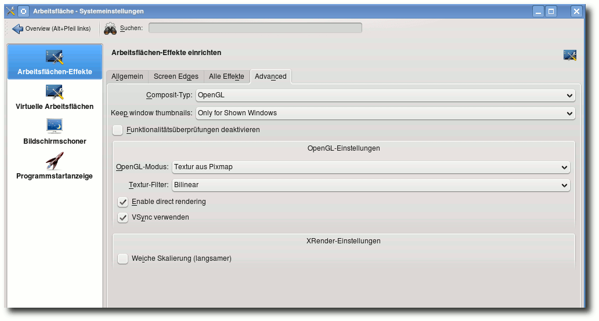Neue Reiter und neue Funktionen in der Effekt-Konfiguration.
Neue Kleider
Viele Artikel wurden geschrieben, hauptsächlich über das neue Desktop-System „Plasma“ und das Prinzip der widget-ähnlichen „Plasmoiden“, kleine, eigenständige Anwendungen, die gekapselt für sich auf der Benutzeroberfläche leben und vom Anwender individuell konfiguriert und angepasst werden können. So das Prinzip. Die Realität zeigt jedoch, dass die Plasmoiden noch nicht ganz das Zeug haben, die ursprüngliche Leistungsvielfalt und Konfigurierbarkeit des „Vaters“ KDE 3.5 abzulösen. Für die fünfte Januarwoche war das Erscheinen der KDE-Version 4.2 geplant und man hat Wort gehalten, denn pünktlich am 27. Januar wurde KDE 4.2 veröffentlicht. Die KDE-Entwickler sehen gerade die Version 4.2 als wichtigen Meilenstein für die kommenden Jahre. Bei dieser Gelegenheit sei erwähnt, dass die Version 4.3 bereits für den kommenden Sommer 2009 geplant ist. Gleich vorweg gesagt: Es lohnt sich auf jeden Fall, einen Blick auf die KDE-Version 4.2 zu werfen. Wer mit den aktuellen Distributionsupdates bereits auf die Variante 4.1.3 gewechselt hat, der dürfte sich schon jetzt grundlegend an die etwas anders gelagerte Bedienung von KDE gewöhnt haben, wird jedoch noch um ein Weiteres positiv erstaunt sein, was die Entwickler zusätzlich bringen. Diesbezüglich wollte man wohl der grundsätzlichen Kritik entgegnen, KDE 4.1 sei noch immer kein würdiger Nachfolger der Version 3.5. Das ist im Detail betrachtet auch wirklich der Fall, denn sieht man die Konfigurationsmöglichkeiten der Vorgängervariante, so bleiben doch noch einige Wünsche offen. KDE 4.2 bessert hier erheblich nach. So ist der Abstand zum „Desktop-Vorbild“ nun deutlich geschrumpft. Vieles, was unter 3.5 ging, ist nun auch unter 4.2 möglich.Näher hingeschaut
Die KDE-Entwickler werden nicht müde zu betonen, wie wichtig und relevant der Schritt in die kommende Version ist. So wurden nach eigenen Aussagen Tausende von Fehlern behoben, Dutzende neuer Features implementiert und neue Funktionen bereitgestellt, die in den ersten 4er-Versionen schmerzlich vermisst wurden. Im Detail bedeutet das: Die Composite-Effekte des 3-D-Desktops sind nun standardmäßig eingeschaltet und integrierter Bestandteil der Benutzeroberfläche, wo immer es die Hardware des Benutzers zulässt. Da die 4er-Version ihre eigenen Composite-Effekte mitbringt, entfällt nun die teils mühselige Installation und Konfiguration des Fenstermanagers Compiz. Die Einstellungsdialoge der „hauseigenen“ 3-D-Effekte zeigen diesbezüglich ein deutliches Detailwachstum. 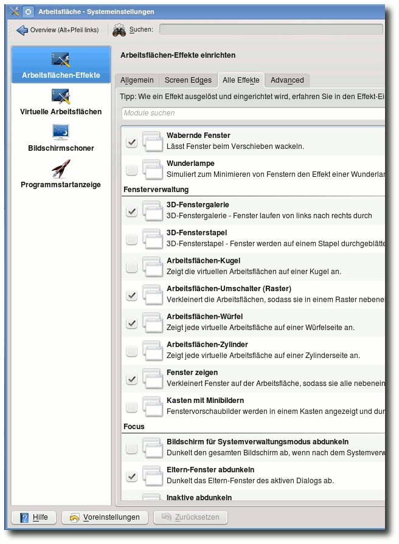Die Liste der 3-D-Effekte wird länger.
Zusätzliche 3-D-Effekte wurde hinzugefügt, die Konfigurationsmöglichkeiten sind deutlich erweitert und ausgebaut worden. Es ist nun möglich, direkt auf das Erscheinungsbild einzelner Desktopelemente Einfluss zu nehmen. Das heißt, Elemente können themeübergreifend im Aussehen angepasst werden. 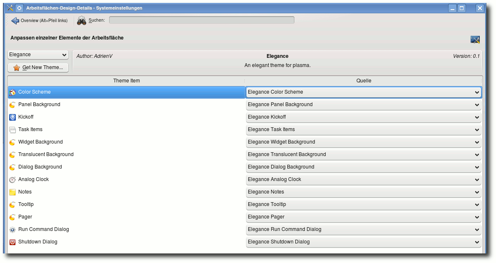
Themenübergreifender Look der Desktop-Elemente.
Die Funktionen der Taskleiste wurden erneut erweitert. So lässt sie sich jetzt auf Wunsch automatisch verstecken, Tasks und Anwendungen können nun gruppiert oder in mehreren Reihen in der Taskleiste angezeigt werden. Das besagte Desktopelement stand wegen der bislang dürftigen Funktionen ohnehin unter schwerer Kritik. Hier hat man massiv nachgebessert, zur Zufriedenheit der Anwender. Die Desktop-Icons müssen nun nicht länger in ihrem Plasma-Container auf der Benutzeroberfläche stehen, sondern können auf Wunsch wieder frei auf dem Desktop platziert werden, wie einstmals unter KDE 3.5. Da das Containerprinzip Anlass zu Diskussionen in der Community war und viele keinen rechten Sinn darin sahen, hat man dem Anwender nun seine Entscheidungsfreiheit zurückgegeben.
Verbesserte Applikationen
Der Dialog „Programm-Ausführen“ ( Alt + F2 ) hat nun an Funktionalität gewonnen, beinhaltet eine Rechtschreibprüfung und erweiterte Plugins. Editoren wie z. B. Kate haben an zusätzlichen Möglichkeiten gewonnen, die Einheitenkonvertierung und -umrechnung wurde verbessert. Die Unterstützung von mehreren Bildschirmen ist deutlich verbessert und fehlerbereinigt worden. Viele der verwendeten Applikationen wurden in Ihrer Funktionalität verbessert. Darunter die Vorschaufunktionen des Dateimanagers Dolphin oder die Performance und Reaktionszeiten von Konquerer. Dolphin verfügt nun über erweiterte Einstellungen, eine verbesserte Seitenleiste und eine integrierte Terminal-Konsole, mit der auch auf der Kommandozeile schnelle Eingriffe im System möglich sind. Die Druckerkonfiguration wurde komplett überarbeitet und bringt nun Funktionen zurück, die Benutzer, laut Aussage der KDE-Entwickler, schmerzlich vermisst haben. Es wurden etliche neue „Plasmoiden“ hinzugefügt, jene kleinen Anwendungen, die die Funktionalität des Desktops erweitern. Darunter nun Programme wie „Twitter“, eine Mail-Nachrichtenüberwachung, ein Kalendermodul, diverse Systemmonitore, RSS-Reader etc. 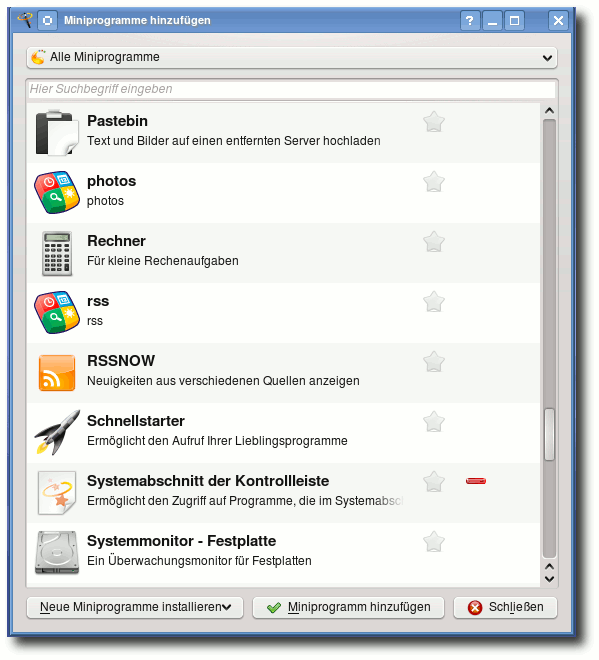Neue Plasmoiden kommen.
Alternativen
Sehr interessant ist übrigens das neue Plasmoid „Lancelot“, ein alternativer Schnellstarter als Ersatz des K-Menüs mit einer deutlich anderen Benutzerführung. Die Anwendbarkeit ist immer noch nicht ganz fehlerfrei, lässt aber auf Entwicklung hoffen, besänftigt sie doch all diejenigen, die den neuen KDE-Starter nicht wirklich als die ultimative Lösung sehen. Ein eingehender Test lohnt sich allemal. 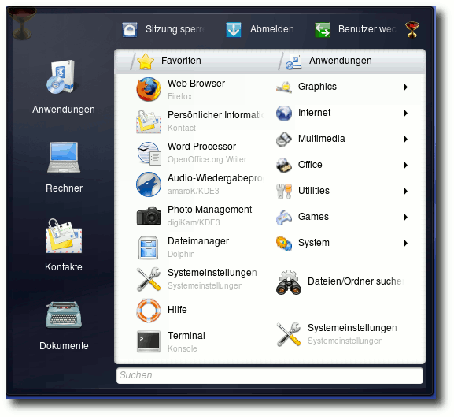Der neue Programmstarter Lancelot, ein Kelch ist sein Symbol.
Um den ganzen Umfang aller Neuerungen und Verbesserungen der kommenden KDE-Version 4.2 zu überblicken, rät selbst das KDE-Team, einen Blick in das Changelog zu werfen. Die Liste ist in der Tat lang und vielversprechend. Es wurde an allen Ecken und Enden geschraubt, gebastelt und erweitert. Die Kritik der Community wurde ernst genommen und mit Version 4.2 nun tatsächlich ein würdiger Nachfolgekandidat bereitgestellt, der es verdient, seine echte Chance zu bekommen. Zur Stabilität sei an dieser Stelle gesagt, dass die Entwickler einiges zum Positiven gewendet haben. Die neue Benutzeroberfläche ist besser integriert, passt sich flüssiger ein und kommt dem gewünschten Handling deutlich näher als alle vorangegangenen KDE-Versionen aus der 4er-Serie. Wer längere Zeit auf der neuen Version gearbeitet hat und zur bestehenden 4.1.3 zurückkehrt, tut sich auffallend schwer, auf die neuen Funktionen zu verzichten.
Fazit
Wer glaubt, KDE 4.2 sei nur ein Facelift der bereits veröffentlichten Ausgabe der neuen Benutzeroberfläche, irrt gewaltig. KDE 4.2 ist objektiv betrachtet der wirkliche Start des KDE-3.5-Nachfolgers, leistet er nun endlich das, was Anwender aus aller Welt von ihm erwarten. Stabilität, Flexibilität, Handhabung, Vielfalt und Optik entsprechen nun zum ersten Mal den Anforderungen. Natürlich ist ein lang gewachsenes Konzept wie der KDE 3.5 nicht in der Summe ausgetauscht, der grundlegende Schritt in genau diese Richtung ist jedoch mit Bravour vollzogen. Zwar ist KDE 4.2 gerade erst aus der Taufe gehoben, das kommende Release 4.3 wird dann jedoch sicherlich auch die letzten Kritiker verstummen lassen. Haben die KDE-Entwickler für diese Variante doch weitere, grundlegende Verbesserungen und weiteren Feinschliff angekündigt. Wer noch immer der alten Schule behaftet ist, der ist gut beraten, dem neuen Platzhirsch eine Chance zu geben. Zu deutlich ist der richtige Weg der neuen Benutzeroberfläche nun vorgezeichnet. Der bis dato etwas verlorengegangene Spaß an der Arbeit mit KDE ist zurück und lässt auf noch mehr hoffen. Die bestehenden Stolperfallen, Abstürze und Kompromisse der letzten Monate sollten der Vergangenheit angehören. Nähere Informationen und natürlich die Möglichkeit, die aktuellen Versionen zu testen und zu installieren, gibt es auf der Homepage des KDE-Projektes (Link). Links| Autoreninformation |
| Oliver Johanndrees ist langjähriger Systemadministrator und Certified Linux Professional für SUSE Linux Enterprise Server 10. Er ist Gründer der Linux User Group Erwitte und engagiert sich bei der Verbreitung des Betriebssystems Linux. Als ehemaliger Programmentwickler hat er ein geschärftes Auge für Neuerungen und Features und versucht alles aus der Sicht des Endanwenders zu sehen. |
KWin 4.2 - Neues aus dem Land der wabernden Fenster
von Martin Gräßlin Seit KDE 4.0 beherrscht der Fenstermanager KWin Compositing, womit Effekte, wie von Compiz bekannt, eingesetzt werden können. Somit ist es möglich, die bekannte Funktionalität und Stabilität des Fenstermanagers zu verwenden und dennoch ein modernes Aussehen zu genießen. Nur ein Jahr nach der ersten Veröffentlichung mit Compositing sind die Entwickler der Meinung, dass der Compositing-Bereich einen Stand erreicht hat, der es erlaubt Compositing standardmäßig zu aktivieren.Selbsttest
Mittlerweile unterstützen eigentlich alle Grafikkartentreiber Compositing. Jedoch gibt es immer noch Nutzer mit älterer Hardware und diese Nutzer sollen weiterhin in der Lage sein KDE zu nutzen. Daher wurde ein cleverer Selbsttest eingebaut, welcher es erlaubt festzustellen, ob die Hardware Compositing unterstützt. Stellt dieser Test fest, dass Compositing nicht unterstützt wird, so bleibt es deaktiviert. Wenn im laufenden Betrieb die Performance zu schlecht wird, so wird dies auch erkannt und Compositing ausgeschaltet. Der Nutzer soll also niemals in die Situation kommen, dass sein System wegen der Effekte nicht mehr reagiert. Es ist auch denkbar, einfach Compositing temporär auszuschalten. Dazu gibt es das Tastenkürzel Alt + Shift + F12 sowie ein spezielles Plasmoid. Dies ist z. B. nützlich, wenn man eine 3-D-beschleunigte Anwendung nutzen will, welche technisch bedingt durch Compositing ausgebremst wird. 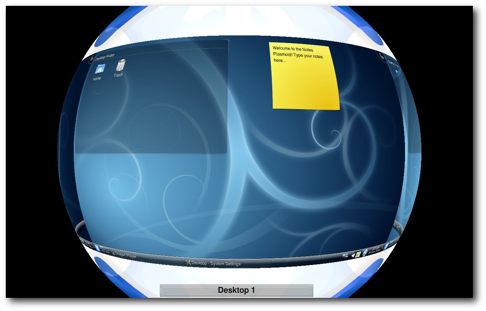Der Kugel-Effekt zur Demonstration.
Performance und Stabilität
Im letzten halben Jahr seit der Veröffentlichung von KDE 4.1 wurde stark an der Performanceschraube gedreht. KWin zeichnet nur noch, wenn sich wirklich etwas geändert hat, womit KWin die meiste Zeit eigentlich in einem Schlafzustand weilt. Vollbildanwendungen werden nicht mehr im Compositing-Prozess berücksichtigt. Somit werden z. B. OpenGL-Spiele nicht mehr ausgebremst und Videos können ohne Störungen abgespielt werden. Im letzten halben Jahr konnten über 350 Bugs geschlossen werden, dies schließt jedoch auch Duplikate und Fehler ein, die nicht bei KDE liegen, sondern z. B. in Treibern oder Distributionen.Vereinfachte Konfiguration
Im Rahmen der Entwicklung von KDE 4.2 haben die Entwickler sich auch daran gemacht, die Konfiguration zu vereinfachen. Es kann nun aus einer Auswahlliste der Effekt zum Animieren von Alt + Tab einfach selektiert werden, ohne in die eigentliche Effektkonfiguration zu wechseln. Auch die Zuweisung von Effekten zu Ecken des Bildschirms wurde vereinfacht. Es gibt nun ein Modul, mit dem es möglich ist, jeder Ecke einen Effekt zuzuweisen. Nichtsdestotrotz haben sich die Entwickler für KDE 4.3 weitere Überarbeitungen und Vereinfachungen vorgenommen. 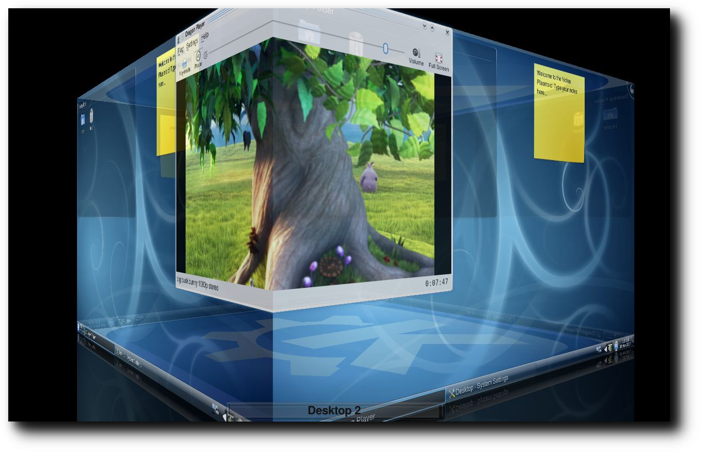Den Desktop-Würfel gibt es jetzt auch in KWin.
Neue Effekte
In KDE 4.2 wurden wieder einige neue Effekte implementiert. Darunter auch der oft gewünschte und im Rahmen von Google Summer of Code entwickelte Desktop-Würfel-Effekt. Dieser standardmäßig nicht aktivierte Effekt kann entweder über das Tastenkürzel Strg + F11 gestartet oder zum Animieren des Wechsels der Arbeitsfläche verwendet werden. Im Rahmen der Entwicklung des Würfels wurde auch ein Zylinder- und Kugel-Effekt implementiert. Diese dienen aber eher als „Proof-of-Concept“, um zu zeigen, was möglich ist. Ein weiterer neuer Effekt ist der von Mac OS X inspirierte Wunderlampen-Effekt. Dieser kann verwendet werden, um das Minimieren einer Anwendung zu animieren. Dabei wird die Anwendung in den Eintrag der Fensterleiste gezogen. 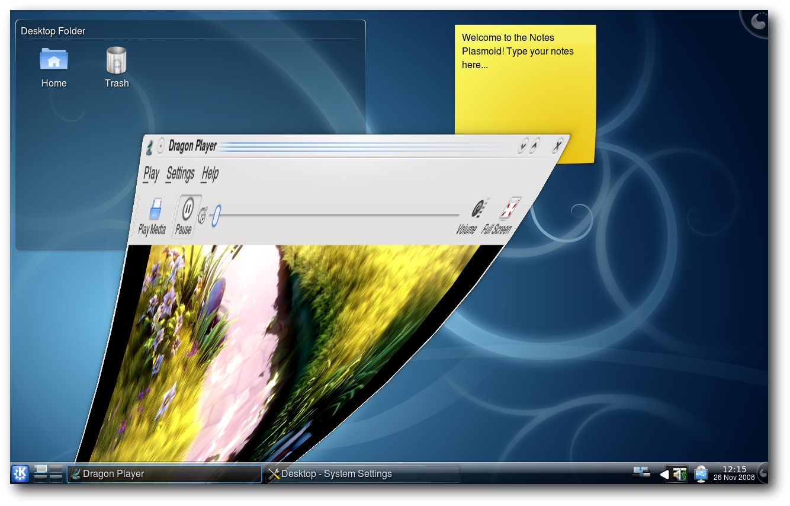Das Minimieren eines Fensters geht mit Wunderlampen-Effektin.
Fensterglühen und die Kontrollleiste
Der eigentliche Schatten-Effekt wurde in KDE 4.2 in ein Glühen umgewandelt. Ein aktives Fenster glüht jetzt blau, inaktive Fenster werfen weiterhin einen schwarzen Schatten. Dieses Glühen gehört zur Fensterdekoration Oxygen, bei anderen wird der aus 4.1 bekannte Schatten eingesetzt. Die Kontrollleiste wird nun bei eingeschaltetem Compositing voll transparent dargestellt und erhielt ein schickes glasiges Design. Ist die Kontrollleiste ausgeblendet, so glüht sie auf, wenn man mit der Maus an den Bildschirmrand fährt.Überarbeitete Effekte
So ziemlich jeder Effekt hat in KDE 4.2 eine Überarbeitung erhalten. Besonders erwähnenswert ist hierbei die Überarbeitung des vom Expose-Effekt (Mac OS X) inspirierten Present-Windows-Effekt. Es ist nun möglich, Present-Windows für Alt + Tab zu verwenden, womit man die wohl bestmögliche Übersicht über alle geöffneten Fenster erhält. Present-Windows hat nun auch mehrere Layouts zur Auswahl. Standardmäßig werden die Fenster nun so angeordnet, dass sie so groß wie möglich dargestellt werden. Das unter 4.1 verwendete Gitter ist weiterhin vorhanden und wird z. B. bei Alt + Tab eingesetzt. 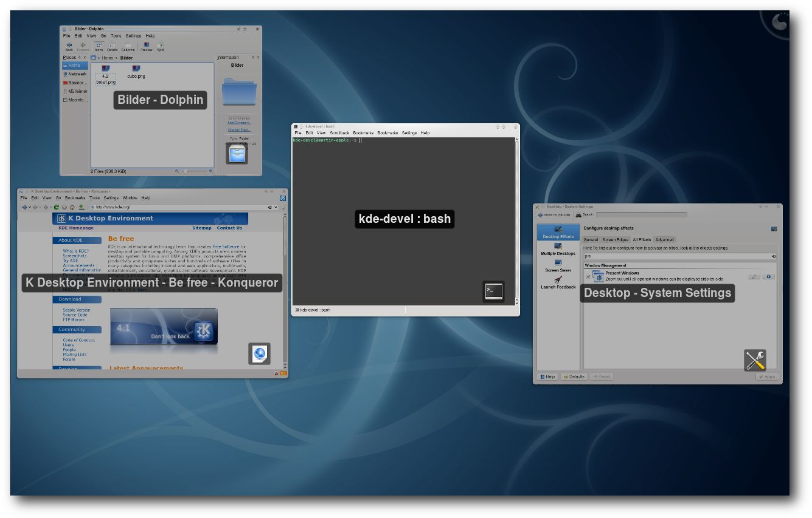Der Present-Windows-Effekt zeigt die Fenster nun so groß wie möglich an.
Der Desktop-Grid-Effekt, welcher einen Überblick über alle Arbeitsflächen liefert, wurde auch verbessert. Insbesondere wird nun das Seitenverhältnis des Monitors berücksichtigt, womit ein 16:9-Bildschirm nicht mehr verzerrt dargestellt wird. Auch ist es möglich, ein Layout festzulegen, welches nicht den Einstellungen des Arbeitsflächenumschalters entspricht. Der Code zur Animation des Wechsels der Arbeitsfläche wurde in einen eigenen Effekt ausgelagert, wodurch es möglich ist, zwischen diesem und dem Würfel zu wechseln. Selbst der erst in KDE 4.1 dazugekommene Cover-Switch-Effekt wurde grundlegend überarbeitet. So kann man nun die Anwendungen durch Mausklick auswählen und eine zusätzliche Vorschauleiste wurde eingefügt. Diese Vorschauleiste entstammt dem Box-Switch-Effekt, welcher dadurch eine Animation erhielt. Die Position der Anwendungen auf der Tiefenachse im Cover-Switch-Effekt kann nun individuell an die persönliche Arbeitsweise angepasst werden.
Fazit
KWin hat im Entwicklungszyklus von 4.2 einen gewaltigen Schritt nach vorne gemacht, obwohl das Team aktuell nur aus drei aktiven Entwicklern besteht. Die Effekte können nun mit denen von Compiz, Mac OS oder Windows Vista mithalten und an einigen Stellen auch durch neue innovative Ideen glänzen. Auch im Punkt Performance braucht KWin sich nicht mehr zu verstecken. Natürlich wird hier weiter an Optimierungen wie an Verbesserungen der Effekte gearbeitet. Links- http://www.undefinedfire.com/kde/41-42-kwin/
- http://blip.tv/file/1581753/
- http://wiki.ubuntuusers.de/KWin/Arbeitsflächeneffekte
| Autoreninformation |
| Martin Gräßlin ist seit Jahren begeisterter KDE-Nutzer und seit der Veröffentlichung von KDE 4.0 auch als Entwickler bei KDE aktiv, wo er sich unter anderem auch an der KWin-Entwicklung beteiligt. |
Der KDE-Dateimanager Dolphin
von Christian Mangold Viele Jahre war Konqueror (Link) neben seiner Eigenschaft als KDE-Browser auch gleichzeitig der Dateimanager für KDE2 und KDE3. Mit der vierten Version der KDE-Desktopumgebung haben sich die Entwickler entschieden, neue Wege zu gehen und neben Konqueror, der auch weiterhin als Dateimanager eingesetzt werden kann, auf ein Programm zu setzen, das nur für die Dateiverwaltung geschaffen wurde. Auf der Basis einer KDE3-Version, die allerdings deutlich weniger Fähigkeiten und Stabilität bietet als die Variante für KDE4, wurde deshalb das Programm Dolphin (Link) entwickelt. Hinweis: Dieser Artikel stammt aus dem Wiki von kubuntu-de.org (Link) und wird unter der „CreativeCommons Attribution-ShareAlike“-Lizenz 3.0 (Link) veröffentlicht.Bedienung
Start des Programms
Dolphin kann u. a. aus dem Kickoff-Menü (Link) über „System » Dateimanager (Dolphin)“ gestartet werden. Natürlich kann das Programm auch mit KRunner (Link) (wird durch Alt + F2 gestartet) und der dortigen Eingabe von dolphin zum Start gebracht werden.Dateien aus-/abwählen
In einem herkömmlichen Dateimanager wählt man mehrere Dateien aus, indem man einen Rahmen um diese zieht, danach kann man die ausgewählten Dateien z. B. gemeinsam löschen oder auch jede beliebige andere Aktion mit diesen durchführen. Dolphin bietet eine alternative Methode, mit der Dateien ausgewählt werden können. Fährt man mit dem Mauszeiger über eine Datei, so erscheint in der linken oberen Ecke ein grünes Symbol, mit dem man die Datei anwählen kann. So ist es dann möglich mehr als eine Datei, egal an welcher Stelle im Ordner sie ist, auszuwählen. Abwählen kann man die ausgewählte Datei ähnlich, bei Überfahren mit dem Mauszeiger erscheint ein rotes Symbol, das die Auswahl rückgängig macht. 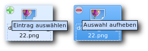Alternatives Aus- und Abwählen.
Ansichtstypen
Die Präferenzen der Nutzer hinsichtlich der Darstellung von Dateien sind häufig unterschiedlich und daher kann Dolphin auf verschiedene Ansichtstypen umgestellt werden. Oft ist es auch sinnvoll, je nach Art der Aufgabe einen anderen Typ der Ansicht zu wählen. Im Folgenden eine kurze Darstellung der Ansichtstypen. Es empfiehlt sich, jeden Typ auszuprobieren, um festzustellen, ob und wann man damit umgehen kann oder möchte.Symbole
Die Standardansicht ist „Symbole“, hier werden die Dateien neben- und untereinander mit dem jeweiligen Icon für den Dateityp dargestellt. Der Ansichtstyp bringt dem Nutzer eine schnelle und überschaubare Übersicht der im Ordner enthaltenen Dateien.Details
Der Ansichtstyp „Details“ bietet dem Nutzer eine Übersicht der Dateien, die in Zeilen untereinander gruppiert werden. Weiter wird in der Standardeinstellung die Größe und das Datum der Erstellung bzw. Änderung angezeigt. Wer hier weitere Informationen braucht, kann mit einem Rechtsklick auf die Beschreibungsleiste (dort wo Name, Größe und Datum stehen) die Informationen Berechtigungen, Eigentümer, Gruppe und Typ hinzufügen. Dieser Typ der Ansicht eignet sich vor allem auch dann, wenn man Dateien mit längeren Dateinamen bearbeiten möchte bzw. natürlich dann, wenn man weiterführende Informationen über die Art der Datei braucht.Spalten
Sollte man Dateien in einer Verzeichnisstruktur bewegen wollen oder aber einfach nur den Ort der Datei nachvollziehen wollen, so bietet sich der Ansichtstyp „Spalten“ an. Hierbei wird der angeklickte Ordner immer in einer Spalte rechts vom selben geöffnet. Der Ansichtstyp „Spalten“ erlaubt es nur voneinander abhängige Ordner nebeneinander darzustellen. Wer zwei unabhängige Ordner nebeneinander haben möchte, dem sei der Ansichtstyp „Teilen“ empfohlen (siehe unten).Vorschau
Zwar wird die angewählte Datei auch immer und im Ansichtstyp „Symbole“ in der Informationsleiste rechts im Programm als Vorschau dargestellt, dennoch könnte man auch eine Vorschauübersicht aller im Ordner enthaltenen Dateien wünschen und so kann man Dolphin auf den Ansichtstyp „Vorschau“ umstellen. Weiter bietet es sich gerade auch auf kleineren Bildschirmen an die Informationsleiste zu entfernen und auf die Vorschau im Hauptfenster zu setzen (Link). 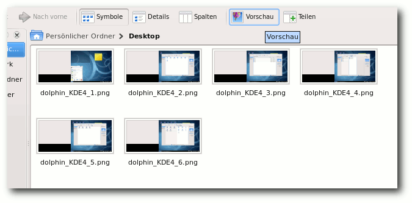Der Ansichtstyp „Vorschau“.
Teilen
Hat man die Aufgabe, viele Dateien von einem an den anderen Ort zu bewegen, so bietet sich der Ansichtstyp „Teilen“ an. Hierdurch wird das Hauptfenster von Dolphin in zwei (oder nach Bedarf auch mehr) Teile geteilt und man kann übersichtlich Dateien bewegen oder auch nur vergleichen. Der Knopf „Schließen“ schließt das gerade ausgewählte Fenster wieder.Seitenleisten
Standardmäßig sind unter Kubuntu die Seitenleisten „Orte“ und „Informationen“ aktiviert. Es gibt aber noch weitere Seitenleisten. Wie diese hinzugefügt werden, kann man weiter unten im Abschnitt „Seitenleisten konfigurieren“ nachlesen.Orte
In der Seitenleiste „Orte“ lassen sich Kurzlinks zu häufig genutzten Ordnern definieren und somit können selbige ähnlich der Lesezeichen in einem Browser leicht besucht und gefunden werden. In der Erstkonfiguration von Kubuntu können hier eine Verknüpfung zum „Home“-Verzeichnis, zum „Netzwerk“, zum „Basisordner“ sowie zum „Mülleimer“ gefunden werden. Weiter werden hier auch Wechselmedien angezeigt und es können sogar mit „dm-crypt“ (Link) verschlüsselte Partitionen entschlüsselt und eingebunden werden. Sollte man weitere Ordner hinzufügen wollen, so geht dies einfach per Drag&Drop. Die Position des neuen Ordners innerhalb der Seitenleiste kann mit Hilfe desselben Prinzips verändert werden.Informationen
Nepomuk (Link) ist ein Framework, was das desktopweite Taggen (Verschlagworten) von Dateien erlauben soll. Dolphin nutzt diese Möglichkeit bereits und man kann daher hier Dateien bewerten, kommentieren und mit Schlagworten versehen. Das Taggen kann danach z. B. die Suche in größeren Datenmengen erleichtern oder das Bewerten von Musikstücken auch außerhalb des Abspielprogramms. Neben der Taggingfunktion werden in dieser Leiste eine Dateivorschau und Typ, Größe und Datum von Dateien dargestellt, die so die Informationsfülle erhöhen. Achtung: Man sollte beachten, dass die Nutzung des Nepomuk-Frameworks noch in den Kinderschuhen steckt. Daher sollten die Erwartungen nicht zu hoch sein. Dateien können in Dolphin mit bis zu fünf Sternen bewertet werden, wobei es möglich ist, halbe Sterne zu vergeben. Die Bewertung erfolgt dabei in der Leiste „Informationen“, die sich in einer Standardkonfiguration auf der rechten Seite befindet. Für den Bewertungsvorgang muss die zu bewertende Datei ausgewählt sein. Ähnlich kann ein Kommentar hinzugefügt werden, indem man dem Dialog unterhalb der Bewertungssterne folgt. Das Hinzufügen von Schlagworten ist auf die gleiche Weise möglich. Kommentare und Schlagwörter der Datei werden nach der Vergabe ebenfalls in der Informationsleiste angezeigt. 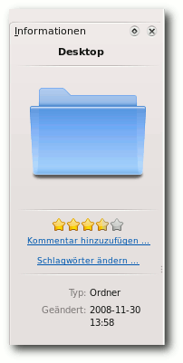Dateien kann man nun bewerten ...
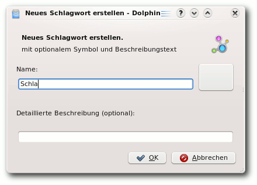
... und Schlagworte hinzufügen.
Ordner und Terminal
Sollte man anstelle oder neben der Ordner-Seitenleiste eine baumartige Übersicht ähnlich dem Windows Explorer bevorzugen, so gibt es dafür die Leiste „Ordner“, die alle Ordner des Dateisystems umfasst. Mit der Ordner-Übersicht hat man einen vollständigen Überblick über die auf dem Rechner vorhandenen Dateien. Achtung: Viele Bereiche des Dateisystems lassen sich unter einem normalen Nutzer nicht editieren, sondern erfordern Root-Rechte. Man sollte unbedingt darauf achten, grafische Applikationen mit kdesudo und nicht mit sudo zu starten, da es sonst aufgrund fehlerhafter Konfigurationsdateien zu Problemen kommen kann. Manchmal ist es zudem wünschenswert oder einfach schneller, eine Aktion in Bezug auf eine Datei auf der Kommandozeile auszuführen. Dolphin bietet eine einfache Methode, schnell den gerade grafisch offenen Ordner auch auf auf der Kommandozeile zu öffnen. Hierzu muss nur die Seitenleiste „Terminal“ hinzugefügt werden.Verwaltung von Wechselmedien
Natürlich werden auch Wechselmedien wie USB-Sticks in Dolphin geöffnet und man kann daher solche auch direkt aus dem Dateimanager heraus bedienen. In Dolphin kann man die gleichen Einstellungen treffen, die sonst im Plasmoid „Geräteüberwachung“ in der Kontrollleiste verwaltet werden (siehe auch „Plasma, der neue KDE-Desktop“, freiesMagazin 09/2008 (Link)). Wechselmedien werden standardmäßig in der Seitenleiste „Orte“ dargestellt. Von hier aus kann man mit einem Klick auf das Symbol zum Medium wechseln und dessen Inhalt darstellen lassen. Mit einem Rechtsklick auf das Symbol kann man das Medium „sicher entfernen“ oder „ausblenden“ und ab KDE 4.2 wird direkt unter dem Symbol sogar die Belegung des Mediums grafisch dargestellt. 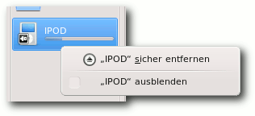Die Belegungsgrafik zeigt den Füllstand an. Hier kann man das Medium auch „sicher entfernen“.
Konfiguration
Dolphin ist in der Erstkonfiguration relativ simpel eingestellt, viele der mächtigen Funktionen müssen erst noch aktiviert bzw. gefunden werden. Im Folgenden eine nicht vollständige Übersicht der wichtigsten Einstellungsmöglichkeiten.Seitenleisten konfigurieren
Seitenleisten erweitern Dolphin erheblich, verkleinern aber auch das Hauptfenster, was nicht immer wünschenswert ist. Es gibt daher einige Methoden, um Seitenleisten einfach ein- oder abzuschalten und zu platzieren.Seitenleisten hinzufügen
Zunächst kann man die Seitenleisten über die Menüleiste „Ansicht » Seitenleisten“ aktivieren, die Leisten werden dabei hinsichtlich „Ordner“ oberhalb der „Orte“ geöffnet und „Terminal“ wird unterhalb des Hauptfensters dargestellt. Den gleichen Effekt kann man dadurch erreichen, dass man auf die Titelleiste einer Seitenleiste klickt und die gewünschte Funktion anwählt. Weiter bietet es sich hier an, sollte man sich dieses Mittels nicht ohnehin bedienen, Shortcuts (Tastenkürzel) zu benutzen. Im Einzelnen sind die Leistentastenkürzel so vorbelegt:- F9: Orte
- F11: Informationen
- F7: Ordner
- F4: Terminal
Seitenleisten platzieren
Eine besondere Fähigkeit von Dolphin ist, dass man die verschiedenen Seitenleisten per Drag&Drop positionieren kann. Hierdurch können die Seitenleisten beliebig ausgetauscht oder gruppiert werden. Nähert man sich einer möglichen Position, so erscheint ein blauer Bereich, der die mögliche Lage andeutet. Es ist sogar möglich, eine Seitenleiste vom Hauptfenster losgelöst zu positionieren. Hierfür muss man das „Kreissymbol“ in der jeweiligen Titelleiste anklicken. Sollte man eine Seitenleiste an einen anderen Ort bewegen, so wird sie künftig automatisch an dieser Stelle geöffnet.Startverzeichnis festlegen und Teilung beim Start
Standardmäßig wird beim Starten von Dolphin das Homeverzeichnis des jeweiligen Nutzers geöffnet. Sollte man hier einen anderen Ordner festlegen wollen, so kann man dies unter „Einstellungen » Dolphin einrichten » Start“ ändern. Über den entsprechenden Knopf ist es auch möglich, den aktuell verwendeten Ordner auszuwählen oder zum Standard zurückzukehren. Weiter kann man hier auch einstellen, dass Dolphin immer mit einem geteilten Fenster startet, wobei man leider noch nicht festlegen kann, dass zwei unterschiedliche Startseiten geöffnet werden. Sollte man z. B. „Spalten“ auf der Startseite wünschen, so muss man diese Option nur nach dem Start auswählen. Dolphin merkt sich den Zustand des Startverzeichnisses. 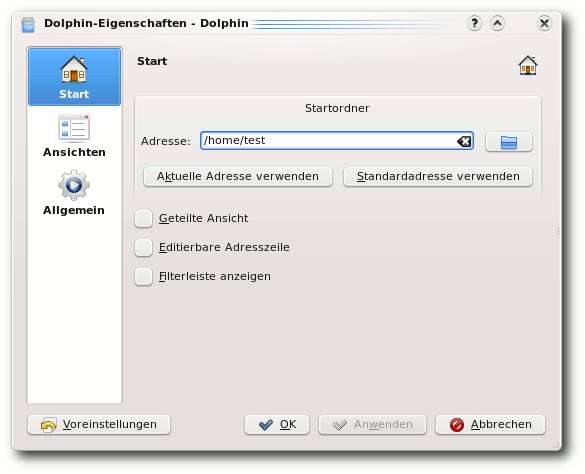Die Einstellungen des Startverzeichnisses.
Editierbare Adresszeile
Über dem Hauptfenster kann man die jeweilige Position im Dateisystem sehen. In vielen Dateimanagern ist es üblich, dort eine mit der Tastatur editierbare Leiste zur Verfügung zu haben, um den Pfad direkt eingeben zu können. Auch Dolphin bietet diese Möglichkeit und es reicht schon ein Klick hinter den dargestellten Pfad, um selbigen mit der Tastatur editierbar zu machen. Sollte man dauerhaft eine editierbare Adresszeile wünschen, so kann man dies ebenfalls unter „Einstellungen » Dolphin einrichten » Start“ verändern. Dolphin muss danach neu gestartet werden.Filterleiste anzeigen
Einige Nutzer vermissen einen Filter, der die Bearbeitung von Dateien in dem Sinne vereinfacht, dass nur solche mit der eingegebenen Symbolkombination dargestellt werden. Auch diese Funktion bietet Dolphin, wenn sie auch wie oben genannt zunächst deaktiviert ist. Unter „Einstellungen » Dolphin einrichten » Start“ kann man die Filterleiste dauerhaft verfügbar machen. Dolphin muss nach einer Änderung aber neu gestartet werden.Aussehen verwalten
Das generelle Aussehen von Dolphin kann unter „Einstellungen » Dolphin einrichten » Ansichten“ verändert werden. Unter anderem finden sich hier Optionen für die Größe der Symbole und Vorschaubilder, für die Detail- und Spaltenansicht und das allgemeine Verhalten bei ordnerspezifischen Einstellungen. 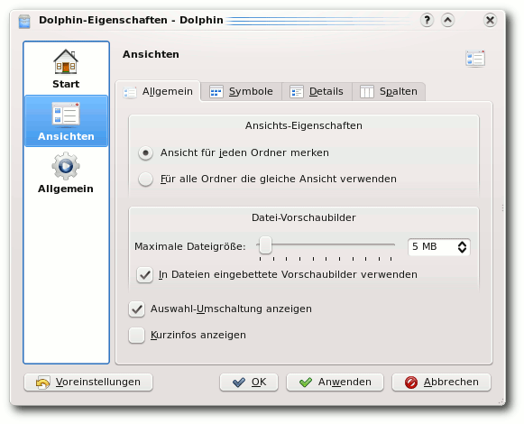Die Ansichtsverwaltung.
Verschieben und Kopieren
Konqueror hat unter KDE3 im Kontextmenü die Möglichkeit geboten, Dateien zu kopieren oder zu verschieben. Diese Option kann auch in Dolphin unter „Einstellungen » Dolphin einrichten » Allgemein“ aktiviert werden. Auf die gleiche Art und Weise kann man auch den Menüpunkt „Löschen“ zum Kontextmenü hinzufügen. 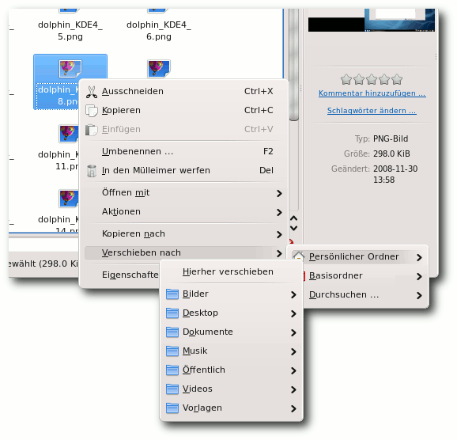Über Kurzlinks kommt man schneller zum Ziel.
Dateien gruppieren und versteckte Dateien anzeigen
Eine interessante Option, um die Übersichtlichkeit zu steigern, ist das Verwenden einer gruppierten Übersicht. Die Dateien werden hier alphabetisch unter dem jeweiligen Buchstaben dargestellt. Aktiviert wird diese Gruppenansicht in der Menüleiste unter „Ansicht » Elemente gruppieren“. An gleicher Stelle kann man sich auch versteckte Dateien anzeigen lassen. Dolphin merkt sich die Einstellung für versteckte Dateien, man sollte die Option daher, falls der Übersichtlichkeit halber gewünscht, nach Erledigung der jeweiligen Aufgabe wieder deaktivieren.Zusatzinformationen anzeigen
Sollte man die „Informationsleiste“ nicht verwenden und die Eigenschaften der Datei lieber direkt unter selbiger dargstellt haben, so kann man die angezeigten Informationen unter „Ansicht » Zusatzinformationen“ erweitern. Zur Auswahl stehen hier neben dem Namen die Größe, das Datum, die Zugriffsrechte, der Eigentümer, die Gruppe und der Typ.Fazit
Dolphin ist ein sehr vielseitiges und mächtiges Werkzeug, das diesen Status dadurch erreicht, dass es nicht den Einschränkungen eines Programms unterliegt, das gleichzeitig Webbrowser ist. Die Trennung der Dateiverwaltung vom Konqueror hat KDE auf eine breitere Basis an Programmen gestellt und erlaubt es den Entwicklern neue Wege zu gehen, wie zum Beispiel das Konzept der auswechselbaren Seitenleisten, das im alten Konqueror sehr störend gewirkt hätte. Dolphin hat sicher noch erhebliches Entwicklungspotential, ist allerdings schon jetzt eines der neuen innovativen Programme, die KDE4 ausmachen und eine gute Alternative zum Konqueror, den man natürlich auch noch weiter als Dateimanager nutzen kann. Links- http://wiki.ubuntuusers.de/Konqueror
- http://dolphin.kde.org/
- http://wiki.kubuntu-de.org/Kubuntu_benutzen/System/Dolphin
- http://creativecommons.org/licenses/by-sa/3.0/de/
- http://wiki.kubuntu-de.org/Kubuntu_benutzen/Allgemein/Kickoff
- http://wiki.kubuntu-de.org/Kubuntu_benutzen/Allgemein/KRunner
- http://wiki.kubuntu-de.org/Konfiguration/eeePC_mit_KDE4\#Dolphin_anpassen
- http://de.wikipedia.org/wiki/dm-crypt
- http://en.wikipedia.org/wiki/NEPOMUK_(framework)
- http://www.freiesmagazin.de/freiesMagazin-2008-09
| Autoreninformation |
| Christian Mangold nutzt Kubuntu seit Oktober 2005 und ist Teammitglied von kubuntu-de.org. Momentan erweitert er hauptsächlich das Wiki von kubuntu-de.org, um vor allem neuen Kubuntu-Nutzern eine einfache Hilfestellung mit Schwerpunkt auf KDE zu geben. |
Amarok 2: Der Wolf setzt zum Sprung an
von Arne Weinberg Mit der Ankündigung „Wir möchten, dass der 2.0 Release der Beste wird“ (Link) hat das Amarok-Entwicklerteam im Sommer des letzten Jahres alle Hoffnungen genährt, dass die zweite Generation des beliebten Audiospielers die Messlatte, die sein Vorgänger im Laufe der letzten vier Jahre bereits sehr hoch gelegt hat, noch übertreffen und neue Maßstäbe im Bereich der freien Musikwiedergabe setzen kann. Ein halbes Jahr, viele Testversionen und ein Final Release später haben sich aus vielversprechenden Zukunftsplänen klare Konturen herausgebildet und es wird Zeit, der neusten Veröffentlichung aus dem Hause Amarok einmal auf den Zahn zu fühlen.Neues Design
Amarok 2 basiert auf KDE 4.1 und passt auch optisch nahtlos in das Bild der jüngsten Ausgabe des K-Desktops. Bei der Ablösung des Plastikstils aus längst vergangenen KDE-Tagen baute das Amarok-Team auf die Unterstützung des Oxygen-Projekts, das gemeinsam mit dem Desktop Plasma und Amarok die Akademy Awards 2008 gewinnen konnte (siehe „Postkarte von Konqui aus Belgien“, freiesMagazin 09/2008 (Link)). Darüber hinaus folgt der beliebte Medienspieler dem Trend vieler KDE4-Anwendungen und greift zu weiten Teilen auf vektorbasierte Grafiken zurück. Der Entwickler Ljubomir Simin kommentierte diesen Schritt damit, dass die Verwendung von skalierbaren SVG-Themes ein neues Level an Flexibilität bringe und die Designarbeit noch aufregender mache (Link). 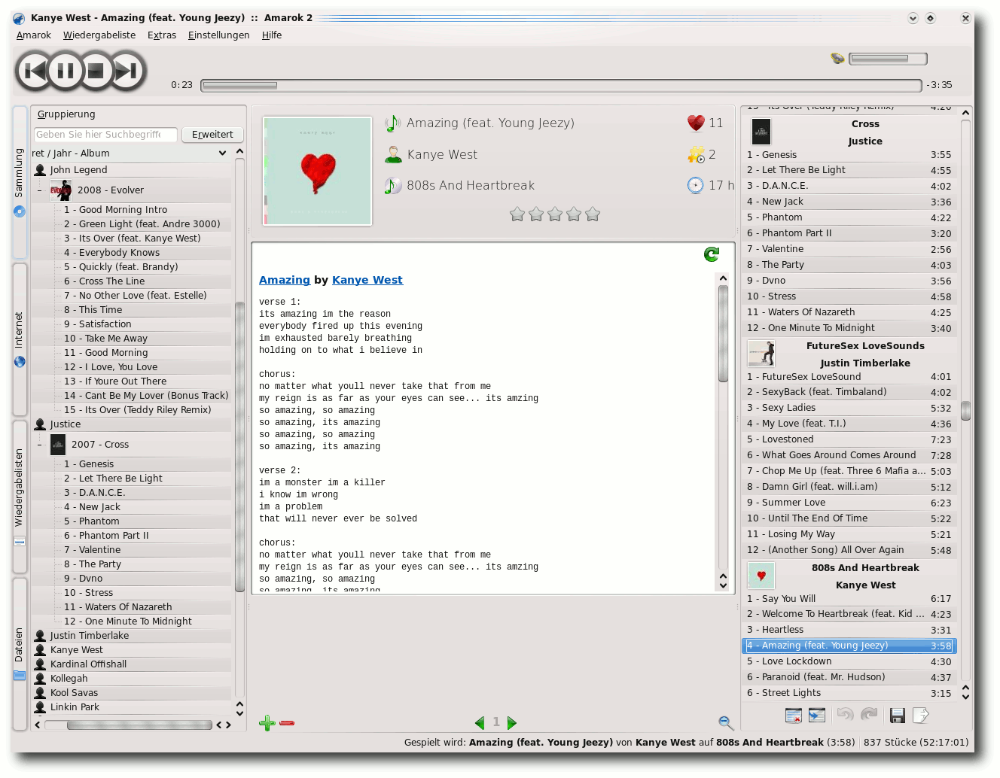Das dreiteilige Abspielfenster.
Der fast zweijährige Entwicklungsprozess von Amarok 2 war insbesondere hinsichtlich des Artworks geprägt von zahlreichen Experimenten und Revisionen. Schon zu Beginn der Umgestaltungsphase wurde deutlich, dass sich die Entwickler bei den Formen und Farben der neuen Version einige grundlegende Änderungen auf die Fahne geschrieben haben. So brach man unter anderem mit der Tradition, die Bedienelemente wie gewohnt unscheinbar in der unteren rechten Ecke zu platzieren und ordnete sie im oberen Fensterbereich an, wo sie sich nun zum Lautstärkeregler und der Fortschrittsleiste gesellen. Nachdem die Programmierer die Abspieltasten in den Alphaversionen noch unkonventionell in der Mitte untergebracht hatten (Link), finden sie sich seit dem Eintritt in die Beta-Phase am linken Rand des Kopfbereiches wieder. Für erheblich mehr Gesprächsstoff unter den Amarok-Benutzern sorgte die neue Dreiteilung des Abspielfensters: Die dominierende Plasma-Widget-Ablage wird vom einklappbaren Medienbrowser zur Linken und der Wiedergabeliste auf der rechten Seite eingerahmt. Letztere überzeugt ungeachtet der weniger hervorstechenden Rolle im Gesamtkonzept vor allem durch ein übersichtlicheres Erscheinungsbild, indem die wichtigsten Informationen auf kleinem Raum dargestellt und die verschiedenen Alben klarer voneinander abgegrenzt werden. Die grundrenovierte Benutzeroberfläche stieß allerdings insgesamt nicht nur auf Gegenliebe unter den Anwendern. Mit dem Ziel konzipiert, den Zugang zu den Musikinformationen möglichst komfortabel zu gestalten, fehlen dem jungen Audioplayer trotz aller optischen Innovationen noch an manchen Stellen hilfreiche Konfigurationsoptionen, etwa eine unkomplizierte Anordnung der einzelnen Fensterelemente. Den Aufschrei vieler Kritiker, die besonders bei der Anpassung der Wiedergabeliste die einstige Funktionalität von Amarok 1.4 vermissten, hat das Team von Programmierern jedoch nicht überhört und kündigte für die Version 2.1.0 spürbare Fortschritte in Bezug auf die Konfigurierbarkeit an (Link).
{kind=link}
Das Service-Framework
Zu einem Hauptziel der Entwicklung von Amarok 2 erklärten die Verantwortlichen den Ausbau der Anbindung an Online-Musikläden und andere Webdienste. Über die Plattform für freie Musik Jamendo (Link) lassen sich fortan noch bequemer Songs aller Musikrichtungen auf den eigenen Computer laden. Auch das Independentlabel Magnatune (Link) und der populäre Internetradioservice Last.fm (Link) sind wie schon in der Ausgabe 1.4 vertreten, sie lösten das Interesse von weiteren Musikprojekten aus, die nun in der KDE-Software Einzug halten. So auch LibriVox (Link), ein umfangreiches Portal für gemeinfreie Hörbücher, oder die Webseite MP3tunes.com (Link), welche virtuelle Schließfächer für die Onlineaufbewahrung der privaten Musiksammlung anbietet. Damit nicht genug, können Amarok-Anwender in Zukunft auch die Dienste der OPML- und Shoutcast-Directories (Link) in Anspruch nehmen, die unzählige Listen von Podcasts und Radiosendern bereitstellen. Komplettiert wird die Liste der neuen Amarok-Partner durch den Mediaserver Ampache (Link), der die Bearbeitung und Wiedergabe von Audiodateien über das Internet ermöglicht. 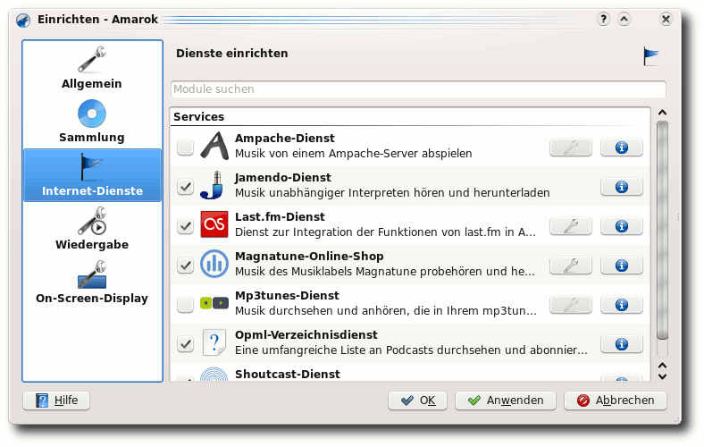Die Einstellung von Internetdiensten.
Eine parteiische Wiedergabeliste
Die neue Playlist des freien Musikspielers macht nicht nur auf den ersten Blick einen guten Eindruck. Haarsträubende Geschwindigkeitsprobleme bei einer großen Anzahl an Liedern gehören dank MySQL-Embedded der Vergangenheit an und als virtuelles Sahnehäubchen integrierten die Entwickler die so genannte „Biased Playlist“ (Link): Basierend auf der herkömmlichen dynamischen Wiedergabeliste, kann die überarbeitete Playlist von den unterschiedlichsten Kriterien beeinflusst werden, die wiederum in ihrer Intensität veränderbar sind. Beispielsweise können Nutzer als Kriterium das Veröffentlichungsjahr 2009 mit einer Genauigkeit von 70 % und gleichzeitig als favorisiertes Genre Rockmusik mit 30 % Genauigkeit einstellen, sodass Amarok selbst die passendsten Stücke heraussucht und wiedergibt. Ergänzt wurde die frische Wiedergabeliste im Rahmen der aktualisierten Version 2.0.1 mit einer weiteren nützlichen Funktion: Der dänische Amarok-Mitarbeiter Nikolaj Nielsen stellte eine Suchfunktion für die Wiedergabeliste zur Verfügung (Link), nachdem zuvor nur das Durchsuchen der gesamten Musiksammlung möglich gewesen war. 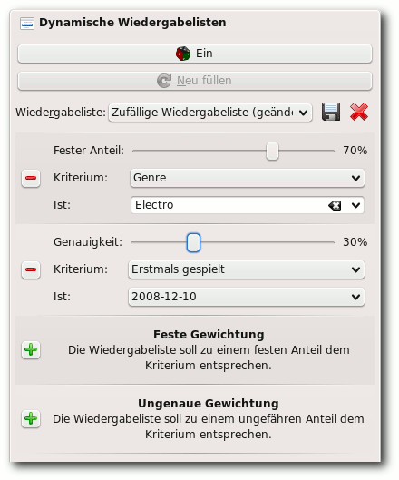Kriterienwahl für die Playlist.
Mit der Kraft von KDE4
Hebt man die verzierte Motorhaube von Amarok 2 einmal an, entdeckt man auch hier die aktuellen Technologien der K-Desktopumgebung. Zum einen die viel diskutierte Multimedia-API Phonon (Link), an der sich in der Diskussion um das Multimedia-Framework der Zukunft die Geister geschieden hatten (Link). Aufgabe von Phonon ist es, eine einheitliche Schnittstelle für Audio- und Videoprogramme zu bilden und so eine zentrale Konfiguration der Anwendungen zu erlauben. Eine weitere Komponente von KDE4, die künftig im Audioplayer zum Einsatz kommt, ist das Plasma-Projekt in Form der bereits erwähnten Plasma-Widgetablage. Im Zentrum des neuen Abspielfensters lassen sich Plasmoids ablegen, kleine Programme, die den Liedtext, Wikipedia-Artikel oder andere Hintergrundinformationen zum aktuellen Stück und Interpreten darstellen (siehe „Plasma, der neue KDE-Desktop“, freiesMagazin 09/2008 (Link)). Bislang ist das Angebot an Widgets noch überschaubar. Rotation oder freie Skalierung sind im Gegensatz zum Plasmadesktop noch nicht durchführbar, doch auch hier betont das Entwicklerteam, dass die Veröffentlichung erst das Fundament gelegt habe, die weiteren Bausteine werden nicht zuletzt mit der Unterstützung der Community sukzessive folgen (Link). Das dritte Element im Bunde ist KDEs neue Hardwareschnittstelle Solid (Link). Mit ihr soll die Unterstützung für mobile Geräte auf ein konkurrenzfähiges Level gehoben werden, unter anderem auch für MTP-Geräte und Apples beliebte iPod-Reihe. Neben der benutzerfreundlichen Synchronisation von portablen Abspielgeräten nennt der leitende Programmierer Alejandro Wainzinger (Link) den Abgleich von Albumcovern und die Übermittlung von unterwegs gehörten Stücken an Last.fm als weitere Möglichkeiten, die sich durch den Umstieg auf das Solid-Backend eröffnen. Wie jedoch schon nach dem Erscheinen der ersten Alphaversion befürchtet wurde (Link), war eine zufriedenstellende Anbindung an MP3-Spieler bis zur endgültigen Freigabe von Amarok 2 mangels Zeit und personellen Ressourcen nicht anzunehmen. Damit ist die Solid-Integration zum gegenwärtigen Zeitpunkt ein Bereich, in dem noch großes Potential an Verbesserungen besteht, die von einer der nächsten Ausgaben zu erwarten sind (Link).Wermutstropfen
Vielerorts führte das Fehlen der genannten Funktionen und weiterer essentieller Bestandteile, etwa eines Equalizers und der Unterstützung für alte Amarok-Skripte, gepaart mit der im ursprünglichen Sinne gewöhnungsbedürftigen Benutzeroberfläche, zu einer Grundsatzdiskussion über das oft zitierte Open-Source-Prinzip „Release early, release often“. Manch einer dürfte sich dabei an die mitunter vernichtenden Rückmeldungen zur Veröffentlichung von KDE4 erinnert gefühlt haben und tatsächlich weisen die Reaktionen der Anwender Parallelen auf: Wenn auch nicht so ausgeprägt wie bei der Desktopumgebung, geraten oft die Umstände der freien Softwareentwicklung in Vergessenheit. Die Funktionen, über die man sich als Benutzer freut oder über deren Fehlen man sich ärgert, entstehen, weil sich jemand irgendwo auf der Welt dazu entschließt, seine kostbare Freizeit in dieses Projekt zu investieren. Und obwohl die Verantwortlichen immer wieder mit Nachdruck darauf hingewiesen haben, dass Amarok 2.0 nach einer kompletten Neugestaltung nicht das Ende, sondern der Anfang einer Geschichte ist, dass alle vermissten Komponenten Kapitel für Kapitel hinzugefügt werden und dass es jedem offen steht, weiterhin Amarok 1.4 für die Musikwiedergabe zu verwenden, verleihen nicht Wenige ihrer Verärgerung durch Unsachlichkeit und nicht durch konstruktive Unterstützung Ausdruck. In diesem Licht betrachtet ist Amarok 2.0 keinesfalls ein perfektes Endprodukt, sondern bringt ähnlich wie sein naher Verwandter KDE4 neue Konzepte mit all ihren Ecken und Kanten, auf die man sich nach dem Abschleifen freuen kann. 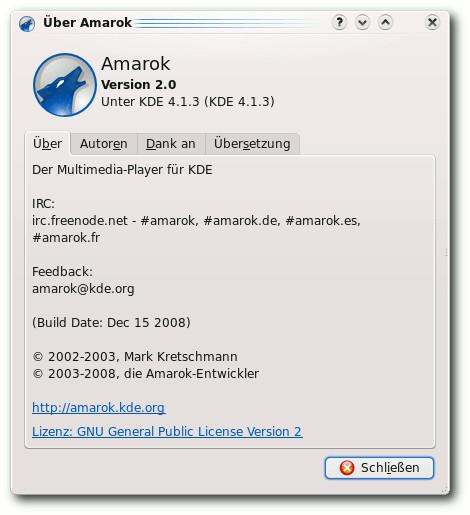Der Info-Dialog von Amarok 2.
Hinweis: Das Logo des Plasma-Projekts unterliegt dem Copyright des KDE e. V. und wird unter der GNU Lesser General Public License 2.1 (Link) veröffentlicht. Links
- http://amarok.kde.org/de/node/530
- http://www.freiesmagazin.de/freiesMagazin-2008-09
- http://ljubomir.simin.googlepages.com/awnissue10
- http://amarok.kde.org/files/Image/AI/13/work5.jpg
- http://amarok.kde.org/blog/archives/858-From-the-Post-2.0.0-Git-Vaults,-Part-2,-The-Playlist-Evolved.html
- http://www.jamendo.com/de/
- http://www.magnatune.com/
- http://www.lastfm.de/
- http://librivox.org/
- http://www.mp3tunes.com/
- http://yp.shoutcast.com/
- http://ampache.org/
- http://amarok.kde.org/blog/archives/713-Weekly-Update,-Secret-Plans-Divulged,-c.html
- http://amarok.kde.org/blog/archives/854-Amarok-2-playlist-searching.html
- http://phonon.kde.org/
- http://www.pro-linux.de/news/2006/9688.html
- http://amarok.kde.org/en/releases/2.0
- http://solid.kde.org/
- http://amarok.kde.org/blog/authors/32-Alejandro-Wainzinger
- http://www.linux-community.de/Internal/Nachrichten/Erste-Alpha-von-Amarok-2
- http://amarok.kde.org/en/node/597
- http://www.gnu.org/licenses/lgpl-2.1.html
| Autoreninformation |
| Arne Weinberg beschäftigt sich seit 2006 mit Linux (ArchLinux und Kubuntu) und verfolgt fast ebenso lange das Geschehen rund um KDE. So wurde er auf Amarok aufmerksam und testet seit einem Gespräch mit Harald Sitter die Nightly-Builds von Amarok 2. |
Eine kleine Einführung in KDevelop
von Christian Imhorst Die Besonderheit von der integrierten Entwicklungsumgebung (IDE) KDevelop (Link) liegt darin, dass man ziemlich einfach ein ganzes Softwareprojekt erstellen kann. Dabei nimmt es einem die Erstellung und Verwaltung aller benötigten Projektdateien wie Quelltext, Configure-Skript, Makefile, Lizenz und Dokumentation ab. Wenn das Projekt fertig ist, kann es als Tar-Archiv gepackt und veröffentlicht werden. Jeder, der mal den Quelltext eines Open-Source-Projekts heruntergeladen hat, um ihn anschließend zu kompilieren, kennt solche Archive - und mit KDevelop hat man sie schnell gebaut.Einführung und Installation
KDevelop lag im Dezember 2008 in der Version 3.5.4 vor, doch die 4er ist schon in den Startlöchern. Im selben Monat erschien nämlich auch KDevelop 4.0 Alpha5 (3.9.84), welches zusammen mit der Beta 2 von KDE 4.2 veröffentlicht werden soll (Link). Die IDE umfasst verschiedene Programme, die man zum Programmieren unter GNU/Linux und anderen Unix-basierten Betriebssystemen braucht. Darunter befinden sich ein Texteditor, mit dem der Quelltext geschrieben wird, ein Compiler zum Übersetzen des Quelltextes, ein Linker und Werkzeuge zum Entwickeln grafischer Oberflächen wie der Qt-Designer. Installiert man KDevelop, muss man also eine ganze Reihe von Werkzeugen gleich mit installieren, damit alle Abhängigkeiten erfüllt sind. Wichtig sind neben dem eigentlichen Programm KDevelop auch noch die Pakete make, automake, libtool, autoconf, flex, gcc (eventuell mit gcc-c++, g++ bzw. build-essential unter Debian-basierten Systemen) und konsole (bzw. kdebase unter Fedora). Falls diese Programme nicht automatisch von der Paketverwaltung installiert werden, sollte man das noch nachholen. Die Liste kann leider nicht vollständig sein, da vielleicht noch das eine oder andere Paket zusätzlich gebraucht wird, je nachdem, welches Betriebssystem und welchen Desktop man verwendet. Eine Liste mit allen Anforderungen von KDevelop 3.5 findet man auf der KDevelop-Webseite (Link). Nach der Installation kann man KDevelop über den Eintrag „Entwicklung“ im KDE- oder GNOME-Menü mit verschiedenen Voreinstellungen starten. Um sich einen ersten Eindruck zu verschaffen, klickt man am besten auf „KDevelop: C/C++“. Am Anfang fallen einem besonders die vielen verschiedenen Schaltflächen am linken, rechten und unteren Rand zum Ein- und Ausblenden der verschiedenen Arbeitsbereiche auf. Davon sollte man sich aber nicht verwirren lassen. Für Neueinsteiger ist vermutlich die Dokumentation als Hilfe zur Selbsthilfe am Wichtigsten. Ein „Handbuch zu KDevelop“ findet man zwar im Menüpunkt „Hilfe“ (oder man drückt einfach die Taste F1), will man aber direkt auf ein bestimmtes Hilfe-Dokument zugreifen, dann ist der Weg über die Schaltfläche „Dokumentation“ ganz rechts im Fenster schneller. Nach dem Anklicken erscheint eine Baumstruktur mit Links zu den einzelnen Dokumenten. 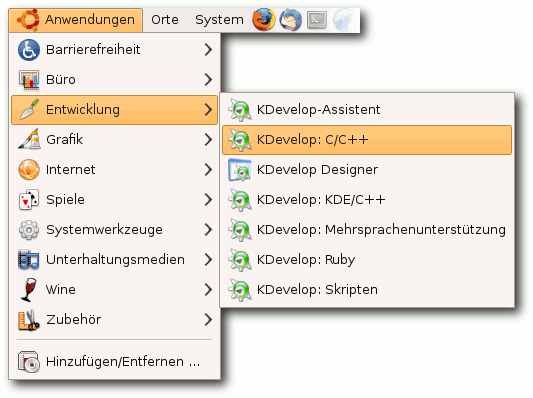KDevelop im Menü (hier GNOME).
Hallo Welt
Um KDevelop einmal auszuprobieren, kann man ein kleines „Hallo Welt“-Programm für die Konsole in C++ erstellen. Dazu braucht man nicht einmal Kenntnisse in der Programmiersprache. Die IDE nimmt einem das alles ab. Dazu wählt man im Menü „Projekt“ den Eintrag „Neues Projekt“. Es öffnet sich ein Fenster, in dem verschiedene Projektarten für C und C++ zur Auswahl stehen. Egal für welches Projekt man sich entscheidet, KDevelop erstellt ein Grundgerüst, dass man dann selber erweitern kann. Ein einfaches „Hello World“-Programm findet man im Zweig von „C++“. 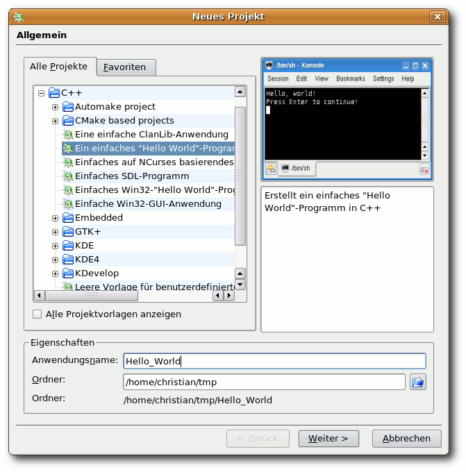Die Auswahl des „Hello World“-Programmes.
Unten im Fenster „Neues Projekt“ hat man noch das Feld „Eigenschaften“. Hier muss man seinem Projekt einen Namen geben und den Ordner auswählen, in dem man die Projektdateien speichern will. Man kann dort zum Beispiel „Hallo_Welt“ eintragen und als Ordner „tmp“ im eigenen Homeverzeichnis auswählen, vorausgesetzt, es gibt ihn schon. Mit der Schaltfläche „Weiter“ gelangt man dann zum nächsten Fenster. Hier kann man seinen Namen, E-Mail-Adresse und Versionsnummer des Programms eintragen sowie die Lizenz auswählen. Im nächsten Fenster könnte man noch die Versionsverwaltung wählen, die man benutzen möchte, oder einfach nochmal auf „Weiter“ klicken. Danach folgt ein Fenster mit der „Vorlage für die h-Dateien“ und danach noch eins mit der „Vorlage für die c-Dateien“. Beide kann man überspringen, um im letzten Fenster die Erstellung des Projekts abzuschließen. KDevelop legt dann die Dateien für das Projekt an und zeigt das Gerüst für den Quelltext im Editorfenster. Damit C++-Programme ausgeführt werden können, muss der Quelltext zuerst mit einem Compiler in eine maschinenenlesbare Form übersetzt werden. Normalerweise ruft man ihn dazu mit verschiedenen Parametern auf. Die Arbeit nimmt einem aber KDevelop ab. Um die Übersetzung zu starten, wählt man im Menüpunkt „Erstellen“ den Punkt „Programm ausführen“. Alternativ kann man auf das blaue Zahnrad in der Werkzeugleiste klicken oder man drückt Shift + F9. Es erscheint ein Fenster mit der Frage „Soll zunächst 'Automake && Konsorten' ausgeführt werden?“ Die Frage bestätigt man mit „Ausführen“ und im unteren Bereich des Fensters tauchen zahlreiche Meldungen auf. Kommt es zu Problemen oder Fehlern, kann man die entsprechende Meldung dort mit der Zeilennummer sehen, in der KDevelop das Problem vermutet. Wenn die Übersetzung wegen eines Fehlers abgebrochen wurde, erscheint eine Meldung wie „*** Beendet mit Status 2 ***“. Warnungen führen nicht zum Abbruch, sie weisen lediglich auf Stellen hin, die zu Problemen führen könnten. Geht alles gut, wird das Programm direkt in der Konsole gestartet. 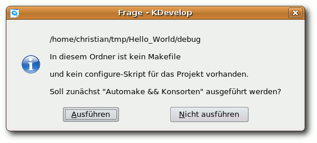
Beim ersten Kompilieren werden auf Nachfrage die notwendigen Dateien erstellt.
Die ausführbare Datei wird übrigens im Projekt-Ordner unter debug/src gespeichert. Der Name der Datei ist derselbe wie der des Projekts. Wenn man die Datei direkt in der Konsole ausführen möchte, muss man dazu in den entsprechenden Ordner wechseln und das Programm mit dem Befehl ./Hallo_Welt starten. In KDevelop selbst sieht man alle Dateien eines Projekts, wenn man auf der linken Seite weiter unten auf die Schaltfläche „Dateibaum“ klickt. Die IDE hat für das Projekt eine ganze Reihe unterschiedlicher Dateien erstellt. Die allermeisten davon sind für den Einsteiger erstmal völlig uninteressant, da sie Einstellungen für das Übersetzen und Ausführen des Programms beinhalten. Da KDevelop diese Dateien angelegt hat, sind die Einstellungen von Anfang an richtig gesetzt und man braucht keine Änderungen an ihnen vornehmen. Wichtig sind eigentlich nur die Quelltextdatei, die mit der Endung .cpp im Ordner src, und das fertige Programm in debug/src. Eventuell ist auch noch die Projektdatei mit der Endung .kdevelop interessant. Wenn sie aus einem Dateimanager heraus aufgerufen wird, wird das Projekt sofort mit KDevelop geöffnet. 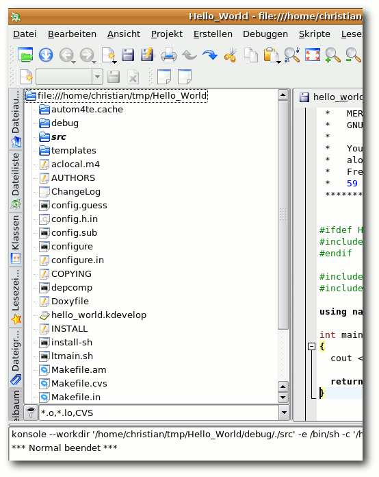
Die zu einem Projekt erstellen Programmdateien.
Wie warm ist es (in Fahrenheit bitte)?
Wenn einem das „Hallo Welt“-Programm zu simpel ist, kann man den kompletten Inhalt der Quelltextdatei löschen und zum Beispiel ein Programm erstellen, das Fahrenheit in Celsius umrechnet: #include <iostream> using namespace std; int main() { double fahrenheit, celsius; cout << "Bitte Temperatur in " << "Fahrenheit eingeben: "; cin >> fahrenheit; celsius = (5.0 / 9.0) * (fahrenheit-32.0); cout << fahrenheit << " Grad " << "Fahrenheit entsprechen " << celsius << " Grad " << "Celsius.\n"; return 0; }Die ersten beiden Zeilen #include <iostream> und using namespace std; sind wichtig, um den Compiler mit den Anweisungen cin und cout bekannt zu machen. Ohne diese Zeilen kann das Programm nicht übersetzt werden. Danach folgt die Funktion main(), die den Startpunkt eines jeden C++-Programms bildet. Sie muss also immer vorhanden sein. Anschließend werden mit double fahrenheit, celsius; zwei Variablen für die Temperaturen Fahrenheit und Celsius definiert. Die Zeichen << und >> sind sogenannte Stream-Operatoren. Bei der Ausgabe wird alles, was rechts vom Operator steht, in den Stream geschrieben, der links von ihm angegeben ist. Bei der Eingabe ist es umgekehrt. Im ersten Fall wird alles auf der rechten Seite des Operators in den Stream cout geschrieben, der es auf dem Bildschirm ausgibt. Im zweiten Fall liest der Stream cin die Eingabe von der Tastatur und legt sie in der Variable fahrenheit ab. In der nächsten Zeile wird die Temperatur in Celsius umgerechnet und anschließend der Inhalt der beiden Variablen zusammen mit dem Text auf dem Bildschirm ausgegeben. Zum Schluss sorgt die Anweisung return 0; dafür, dass das Programm korrekt beendet wird. Jetzt kann man den Quelltext neu kompilieren und anschließend Fahrenheit in Celsius umrechnen lassen.
Probleme in Ubuntu 8.10
KDevelop will in Ubuntu 8.10 „Intrepid Ibex“ nicht so recht kompilieren. Selbst beim simplen „Hallo Welt“-Programm kommt so eine Fehlermeldung: ../libtool: line 2237: X-O0: command not found ../libtool: line 2237: X-g3: command not found ../libtool: line 2406: Xtest2: command not found X: user not authorized to run the X server, aborting. ../libtool: line 2418: Xtest2: command not found ../libtool: line 2426: mkdir /.libs: No such file or directory mkdir: cannot create directory `/.libs': Permission denied make: *** [test2] Error 1 *** Beendet mit Status: 2 ***Das Problem liegt bei KDevelop 3.5.3 und Libtool, wobei letzteres zu den Autotools von GNU gehört, die wichtig für das Kompilieren sind. In Intrepid Ibex ist es in der Version 2.2.4 installiert, der Source-Tree eines KDevelop-Projekts benutzt aber Libtool in der Version 1.5.24. Damit KDevelop die richtige Libtool-Version erzeugt, muss man das entsprechende Template austauschen. Der Einfachheit halber kopiert man dazu die Templates in das eigene Homeverzeichnis. KDevelop sucht zunächst dort nach den Templates, bevor es die aus /usr/share benutzt: cp -R /usr/share/apps/kdevappwizard/ ~/.kde/share/apps/
Danach muss man das Archiv ~/.kde/share/ apps/kdevappwizard/template-common/inca dmin.tar.gz entpacken und die alte Datei ltmain.sh durch die neuere /usr/share/ libtool/config/ltmain.sh ersetzen. Anschließend wird das Paket erneut geschnürt und wieder incadmin.tar.gz genannt. Das neue Archiv ersetzt dann das alte im Template-Ordner. Wenn man jetzt kompiliert, wird die Datei Libtool in der neuen Version erzeugt und es tauchen keine Fehlermeldungen mehr auf - zumindest solange der Quelltext korrekt ist. Ein neues Archiv incadmin.tar.gz habe ich bereitgestellt, wenn man es nicht selbst zusammenstellen mag (Link).
Fazit
Auf dem ersten Blick sieht man vielleicht schon, dass einem KDevelop als IDE sehr viel Arbeit abnehmen kann, wenn man sein erstes Programmierprojekt starten will. Man muss sich keine Gedanken über Makefiles, Configure-Skripte und so weiter machen und kann sich stattdessen ganz auf das Programmieren konzentrieren. Wenn man ein Programm für die Konsole schreiben möchte, steht mit dem einfachen „Hallo Welt“-Programm gleich ein Grundgerüst bereit, das man entsprechend erweitern kann. Aber KDevelop bietet da noch viel mehr. Die Palette reicht vom einfachen Konsolenprogramm über grafischen KDE4-Anwendungen bis zur Vorlage für Linux-Kernelmodule. Was man sich auch für das erste Softwareprojekt vorgenommen hat, KDevelop kann einen dabei sehr gut unterstützen. Für das schnelle Skripten nebenher eignet sich KDevelop als integrierte Entwicklungsumgebung aber nicht so gut. Hier spielen schlanke IDEs wie Geany (siehe „Bezaubernder Geany - Ein Flaschengeist hilft Programmieren“, freiesMagazin 10/2007 (Link)) eher ihre Stärken aus. Links- http://www.kdevelop.org/
- http://www.kdevelop.org/index.html?filename=main2008.html
- http://www.kdevelop.org/index.html?filename=requirements.html
- http://www.imhorst.net/wp-content/uploads/2009/01/incadmintar.gz
- http://www.freiesmagazin.de/freiesMagazin-2007-10
| Autoreninformation |
| Christian Imhorst ist begeisterter Ubuntu- und Debian-Benutzer und kommt daher eigentlich eher aus dem GNOME-Umfeld. Trotzdem benutzt er auch unter GNOME sehr gerne KDE-Programme wie Amarok, KGpg, Kaffeine, Kile und besonders KDevelop, welches ihn bei seinen ersten Schritten in C++ sehr gut unterstützt hat. |
Scannen mit Skanlite
von Christian Mangold Das Programm Skanlite ist die Applikation für KDE4 zum Scannen von Dokumenten und löst somit das noch in KDE3 zum Standard gehörende Kooka (Link) ab. Skanlite kann nicht mehr als Bilder scannen und abspeichern und ist somit sehr einfach und funktional gehalten. Hinweis: Dieser Artikel stammt aus dem Wiki von kubuntu-de.org (Link) und wird unter der „CreativeCommons Attribution-ShareAlike“-Lizenz 3.0 (Link) veröffentlicht.Installation
Skanlite gehört bei einigen Distributionen, wie z. B. Kubuntu 8.10, noch nicht zur Standardinstallation und muss daher mit dem bevorzugten Paketmanager über das Paket skanlite selbst installiert werden. Im folgenden Artikel gibt es eine kurze Anleitung, wie man Skanlite konfiguriert und benutzt. Ausführliche Hinweise zur Bedienung können dem englischsprachigen Handbuch (Link) entnommen werden.Bedienung
Start des Programms
Zunächst ist darauf zu achten, dass der Scanner eingeschaltet ist und vom System erkannt wird, denn Skanlite startet ohne verfügbares Gerät nicht. Einzelheiten hinsichtlich der Hardwarekonfiguration würden den Rahmen des Artikels sprengen; ein Anlaufpunkt bei Problemen mit der Hardware kann beispielsweise das ubuntuusers-Wiki sein (Link). Skanlite kann aus dem Kickoff-Menü (Link) unter „Grafik » Anwendung zum Einlesen von Bildern“ gestartet werden. Weiter kann man natürlich auch den KRunner (Link) benutzen, man muss einfach nur skanlite eingeben. 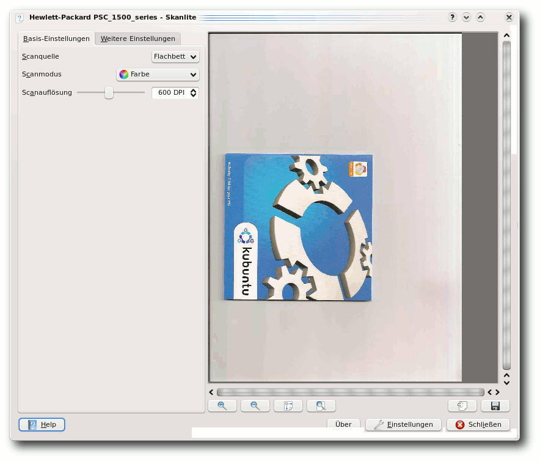Vorschaubild.
Vorschau erstellen
Oft wird man als Erstes ein Vorschaubild einlesen wollen, um die Qualität und das Aussehen des endgültigen Scanergebnisses abschätzen zu können. Hierdurch wird der bei hoher Qualität möglicherweise langwierige, eigentliche Scanvorgang zunächst vermieden. Um die Vorschau zu erstellen, betätigt man, nach Platzierung der Vorlage, das Icon „Vorschaubild einlesen“ rechts unten im Hauptfenster. Nutzer eines unter Linux verbreiteten HP-Endgerätes werden den Start des Vorganges zusätzlich über den „HP Device Manager“ angezeigt bekommen. Diese Informationen haben nichts mit Skanlite zu tun und können vernachlässigt werden. Natürlich sind sie aber auch eine willkommene Ergänzung, denn Skanlite selber bietet beim Einlesen des Vorschaubildes keine Nutzungsinformationen hinsichtlich des Scanners an. 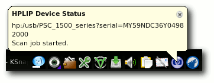Informationen des „HP Device Managers“.
Nach Beendigung des zumeist schnellen Einlesevorgangs wird das Vorschaubild direkt im Hauptfenster von Skanlite angezeigt. Die üblichen Funktionen zum Vergrößern oder Verkleinern das Bildes sind natürlich vorhanden und direkt unter dem Vorschaubild zu finden.
Endgültiges Bild scannen
Bietet die Vorschau das gewünschte Ergebnis, wird der nächste Schritt der endgültige Scanvorgang sein. Selbiger wird durch Anwahl des Icons „Endgültiges Bild einlesen“ gestartet. Das Bild wird nun eingescannt, was je nach Qualität durchaus ein paar Minuten dauern kann. Skanlite zeigt diesmal auch selbst den Status des Vorgangs an.Bild speichern
Nach Abschluss des Scannens muss das Bild nur noch gespeichert werden, hierbei wird eine erneute Vorschau des finalen Scanergebnisses präsentiert. Der Speichervorgang startet mit Anwahl des Icons „Speichern“.Konfiguration
Die Konfigurationsmöglichkeiten hängen von der verwendeten Hardware ab. Will man z. B. die Auflösung verändern, so kann man dies links oben im Hauptfenster in der Registerkarte „Basis-Einstellungen“ erledigen. An dieser Stelle sind weiter auch Einstellungsmöglichkeiten hinsichtlich des „Scanmodus“, d. h. zum Beispiel die Auswahl zwischen einem Farbscan und Schwarz/Weiß sowie die Auswahlmöglichkeit für die „Scanquelle“ zu finden. Letzteres konfiguriert den Einzug der Vorlage, im Regelfall wird das „Flachbett“ sein, bei Scannern mit weiteren Einzügen werden hier allerdings auch Alternativen geboten. 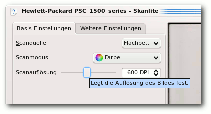Konfigurationsmöglichkeiten, z. B. der Auflösung.
Im Tab „Weitere Einstellungen“ kann man zunächst die Einstellungen hinsichtlich der Bildkompression vornehmen. Unter „Compression“ ist JPEG voreingestellt und als „JPEG compression factor“ wird in der Standardkonfiguration „10“ ausgewählt. Laut Tooltip bringt ein geringerer Faktor eine bessere Bildqualität und eine höhere Einstellung eine bessere Kompression. Die Option „Batch Scan“ erlaubt es bei Scannern mit automatischer Zuführung, mehrere Vorlagen in einer Datei zu speichern.
Fazit
Skanlite bietet die Basisfunktionen, die ein Scanprogramm haben muss. An ein wirklich komplettes Programm muss man aber höhere Anforderungen stellen, so fehlt zum Beispiel eine Möglichkeit zur Texterkennung und es wäre nicht verkehrt, wenn man direkt als PDF exportieren könnte. Ein weiteres Problem ist auch, dass Skanlite momentan noch ohne Icon im K-Menü dargestellt wird (Link). Links- http://de.wikipedia.org/wiki/Kooka
- http://wiki.kubuntu-de.org/Kubuntu_benutzen/Grafik/Skanlite
- http://creativecommons.org/licenses/by-sa/3.0/de/
- http://docs.kde.org/development/en/kdereview/skanlite/skanlite.pdf
- http://wiki.ubuntuusers.de/Scanner
- http://wiki.kubuntu-de.org/Kubuntu_benutzen/Allgemein/Kickoff
- http://wiki.kubuntu-de.org/Kubuntu_benutzen/Allgemein/KRunner
- https://bugs.edge.launchpad.net/ubuntu/+source/skanlite/+bug/293068
| Autoreninformation |
| Christian Mangold nutzt Kubuntu seit Oktober 2005 und ist Teammitglied von kubuntu-de.org. Momentan erweitert er hauptsächlich das Wiki von kubuntu-de.org, um vor allem neuen Kubuntu-Nutzern eine einfache Hilfestellung mit Schwerpunkt auf KDE zu geben. |
Die digitale Brieftasche: KWallet
von Jaroslav Hlavaty Für die sichere Aufbewahrung und Verwaltung von Zugangsdaten und Passwörtern ist in der KDE-Umgebung das Programm KWallet (Link) zuständig. Der Hauptgedanke und Vorteil bei KWallet liegt darin, sich nur noch ein Hauptpasswort merken zu müssen. Die Daten werden mit diesem Hauptpasswort geschützt und stark verschlüsselt in so genannten digitalen Brieftaschen gespeichert. Auf in KWallet gespeicherte Passwörter greifen verschiedene KDE-Programme wie z. B. Konqueror, Kmail, Kopete, KnetworkManager, KNode, smb4k oder Quanta zu. Der im Hintergrund laufende Dienst „kwalletd“ wird mit dem „Dienstprogramm für digitale Brieftasche“ gesteuert. Hinweis: Dieser Artikel stammt aus dem Wiki von kubuntu-de.org (Link) und wird unter der „CreativeCommons Attribution-ShareAlike“-Lizenz 3.0 (Link) veröffentlicht.Bedienung
KWallet startet im Normalfall automatisch beim Systemstart, kann aber auch aus dem KDE-Menü (Link) unter „Programme » Einstellungen » Verwaltung für digitale Brieftasche“ aufgerufen werden. Auf der Konsole oder mit KRunner (Link) wird KWallet über kwalletmanager gestartet.Allgemein
Beim ersten Start von KWallet startet ein Einrichtungsdialog, in dem das Hauptpasswort festgelegt wird. Danach erscheint KWallet als kleine Brieftasche im Systemabschnitt der Kontrollleiste, wobei man am Icon den aktuellen Status erkennt. Ist die Brieftasche geöffnet, greift ein Programm auf die Passwörter zu. Zukünftig muss nach jedem Login einmalig das Hauptpasswort eingegeben werden. Danach füllt KWallet beispielsweise Login-Formulare auf Webseiten automatisch aus. Will eine Anwendung zum ersten Mal auf die Passwörter in der digitalen Brieftasche zugreifen, wird man gefragt, ob man diesen Zugriff einmalig oder dauerhaft erlauben oder auch ablehnen will.Dienstprogramm für digitale Brieftasche
Beim Anklicken der Brieftasche im Systembereich der Kontrollleiste wird das „Dienstprogramm für Digitale Brieftasche (kwalletmanager)“ geöffnet. Es werden alle angelegten Brieftaschen mit ihrem Status (geöffnet/geschlossen) angezeigt. Hier können Brieftaschen geöffnet oder geschlossen werden, neue angelegt oder bereits vorhandene gelöscht werden. Es gibt auch die Möglichkeit, das Hauptpasswort zu ändern oder die Verbindung einer Anwendung zur Brieftasche zu trennen. Diese Funktionen sind über das Kontextmenü beim Rechtsklick auf eine digitale Brieftasche erreichbar. Hinweis: Standardmäßig ist eine Brieftasche mit dem Namen „kdewallet“ angelegt. Mit einem einfachen Klick auf eine Brieftasche wird diese geöffnet. In der Baumansicht auf der linken Seite des Fensters können neue Ordner und Einträge hinzugefügt, alte verschoben oder gelöscht werden. Über eine eingebaute Suchfunktion ist es möglich, Einträge bequem zu durchsuchen. Auf der rechten Seite werden bei Bedarf die Passwörter im Klartext angezeigt.Konfiguration
Der Konfigurationsdialog kann über den Menüpunkt „Einstellungen » Digitale Brieftasche einrichten“ aufgerufen werden.Einstellungen für die digitale Brieftasche
Im ersten Reiter befindet sich die wichtigste Einstellung. Hat man sich für die Benutzung der digitalen Brieftasche entschieden, muss bei „KDE-Brieftaschensystem aktivieren“ natürlich ein Haken gesetzt werden. 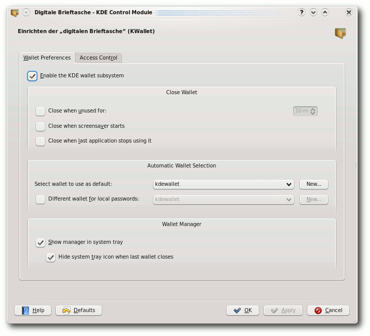Einstellungen für die digitale Brieftasche.
Digitale Brieftasche schließen
Standardmäßig wird eine bereits geöffnete Brieftasche bis zum Ende einer Sitzung offengehalten. Hier wird festgelegt, ob und unter welchen Bedingungen sich die Brieftasche schließen soll. Ist eine digitale Brieftasche geschlossen, wird zum Öffnen erneut das Hauptpasswort benötigt.Automatische Wahl der digitalen Brieftasche
Sind mehrere Brieftaschen angelegt, wird hierüber eine als Standardbrieftasche festgelegt. Standardmäßig werden alle Passwörter in einer einzigen Datei gehalten. Sollen Netzwerkpasswörter und lokale Passwörter in getrennten Dateien gespeichert werden, kann unter diesem Punkt die Einstellung vorgenommen werden.Dienstprogramm für digitale Brieftaschen
In diesem Abschnitt kann das Verhalten von KWallet in Bezug auf den Systemabschnitt der Kontrollleiste konfiguriert werden.Zugriffsüberwachung
Im zweiten Reiter gibt es nur eine Einstellung. Es kann aktiviert oder deaktiviert werden, ob man gefragt werden soll, wenn eine Anwendung auf eine geöffnete digitale Brieftasche zugreifen will. Nimmt man hier den Haken weg, wird der Zugriff auf die digitale Brieftasche für alle Anwendungen automatisch erlaubt. In der Baumansicht darunter sind Anwendungen und deren Zugriffsregeln aufgelistet. Dort können keine Einträge hinzugefügt oder geändert werden, es gibt aber die Möglichkeit, einen Eintrag zu löschen (beim Rechtsklick auf ein Eintrag klappt ein Kontextmenü auf). Beim nächsten Start der aus der Liste gelöschten Anwendung fragt KWallet erneut nach den Zugriffsrechten.Tipps und Problembehandlung
Viele Benutzer finden es lästig, dass man zusätzlich zum Login beim Systemstart nochmals ein Hauptpasswort für KWallet eingeben muss, um die digitale Brieftasche zu öffnen. Es ist natürlich möglich, einfach kein Hauptpasswort einzugeben. Warnung: Hiermit wird allerdings das Sicherheitskonzept von KWallet völlig außer Kraft gesetzt. Sehr interessant ist die Möglichkeit, seine Passwörter und Zugangsdaten z. B. auf einen USB-Stick zu kopieren, um diese auch auf anderen Rechnern zu Verfügung zu haben. Dazu muss man einfach nur die gewünschte Brieftasche per Drag&Drop aus dem kwalletmanager-Fenster auf das Wechsellaufwerk kopieren.Bekannte Probleme
Ein für deutsche Nutzer bestehendes Problem ist die teilweise fehlende Übersetzung der Einstellungsdialoge unter „Einstellungen » Digitale Brieftasche einrichten“. Links- http://utils.kde.org/projects/kwalletmanager/
- http://wiki.kubuntu-de.org/Kubuntu_benutzen/Dienstprogramme/KWallet
- http://creativecommons.org/licenses/by-sa/3.0/de/
- http://wiki.kubuntu-de.org/Kubuntu_benutzen/Allgemein/Kickoff
- http://wiki.kubuntu-de.org/Kubuntu_benutzen/Allgemein/KRunner
| Autoreninformation |
| Jaroslav Hlavaty nutzt Kubuntu seit Oktober 2005. KWallet ist sein erster Wiki-Beitrag für die kubuntu-de.org-Community, um dieser etwas zurückzugeben. |
Leserbriefe
Für Leserbriefe steht unsere E-MailadresseLeserbriefe und Anmerkungen
Kritik an den Leserbriefen
„Anders als im Artikel erwähnt ist Orca ebenfalls bei openSUSE vorinstalliert. Hier sollte in Zukunft besser recherchiert werden. GastfreiesMagazin: Vielen Dank für Ihre Kritik. Wir haben sie an die Autorin M. F. weitergeleitet.“ Warum werden solche Leserbriefe abgedruckt? Interessiert doch die Leser nicht. Damit andere Leser wissen, dass Orca auch bei openSUSE installiert ist? Machen Sie besser eine Rubrik mit Nachträgen, Korrekturen. [... Ich] frage mich, ob es nicht besser wäre, die [Leserbriefe] auf einer separaten Seite zu publizieren und nur ausgewählte ins Heft zu übernehmen. Obwohl es nur digital ist, hat es den Charakter eines Printmediums. Am Ende der Rubrik könnte dann ein Link auf „Weitere Rückmeldungen“ stehen. Kurze Rückmeldungen wie „Euer Magazin ist toll.“ aus einem Forum kopiert, hat auf mich die Wirkung als ob die Autoren den Lesern sagen wollen: „Schau, uns findet jemand gut, wir haben einen Beweis gefunden im Forum.“ (Stark übertrieben, ich hoffe, Sie verstehen mich nicht falsch.) Das Magazin ist gut, das merkt der Leser. Solche Stellen kommen dann amateurhaft rüber.
[Und] warum stehen die Leserbriefe am Anfang? Da sollte doch erstmal ein interessanter Artikel stehen. Sonst verlässt der Leser das Magazin. Mir ging's gerade so. Philipp Gassmann freiesMagazin: Vielen Dank für Ihre Kritik. Es gehört zum Magazinkonzept, mit Lob und Kritik transparent umzugehen. Wir ermutigen die Leser, uns ihre Meinung mitzuteilen. Tun sie das, veröffentlichen wir es auch meistens - gerade wie in diesem Fall, wenn eine nicht unwichtige Information im Originalartikel nicht erwähnt wurde. Die Leserbriefe sind somit in manchen Teilen nichts anderes als „Nachträge“ vom Vormonat. Wir werden aber über eine extra Rubrik hierzu nachdenken. Die Idee klingt auf alle Fälle gut.
Wir werden wahrscheinlich auch in Zukunft nur noch „relevante“ Leserbriefe veröffentlichen. Dies wird zwar wahrscheinlich dazu führen, dass wir weniger Rückmeldungen erhalten, weil die Belohnung für den Leserbriefschreiber (also die Veröffentlichung in freiesMagazin) ausbleibt, aber das wird die Zeit zeigen.
Ihre Anmerkung zur Position der Leserbriefe haben wir aufgegriffen und diese ans Ende des Magazins gesetzt, wo auch alle anderen Interna (bis auf das Editorial) zu finden sind. Hierbei gibt es aber - je nach Magazin - auch unterschiedliche Konzepte. Wir hatten uns damals an der c't orientiert, die die Leserbriefe direkt nach dem Editorial und Inhaltsverzeichnis abdruckt.
„Netbooks“ sind rechtlich geschützt
Ich wollte Euch nur mitteilen, dass der Begriff „netbook“ ein rechtlicher geschützter der Firma Psion ist. Ihr verwendetet ihn im Artikel „Neues aus der Welt der Mobilgeräte“ mehrere Male. Auch wenn die Firma in einer Stellungnahme davon absieht, Blogger und Redakteure abzumahnen, würde ich mich nicht darauf verlassen (Link). Marcel Spitau freiesMagazin: Wir nehmen Urheberrecht und Lizenzen sehr ernst, denken aber, dass vorauseilender Gehorsam niemanden etwas bringt. Zusätzlich glauben wir auch noch ein klein wenig an das Gute im Menschen. Es ist zwar verwunderlich, dass Psion ein Recht für eine Marke erhebt, die es nicht mehr gibt, aber sie dürfen es nun einmal. Nach eigenen Aussagen geht deren Bestreben aber nur gegen die kommerzielle Nutzung des Titels (Link). Ob man das glaubt oder nicht, sei dahingestellt. Wenn uns niemand einen Brief schreibt, werden wir auch weiterhin Netbook sagen - so wie ca. 95 % des gesamten Internets. Solange Psion nicht gerichtlich gegen Intel vorgeht, wird deren Aktion rein gar nichts bringen - außer negative Pressemitteilungen natürlich. Danke aber für den Hinweis und Ihre Sorge um freiesMagazin.PDF-Artikel einzeln herunterladen
Ich würde es begrüßen, wenn man auch einzelne Artikel über einen Feed (auch gern als PDF, um das Format zu erhalten) bekommen könnte. So kann man stückweise das runterladen und lesen, was einen interessiert. Die Artikel könnten auch direkt nach Freigabe verfügbar sein, also vor der Ausgabe des Gesamtmagazins. Aber das ist dann schon eine fast ein Paradigmenwechsel, das ist mir dabei auch klar. Thomas Moenkemeier freiesMagazin: Einzelne PDFs würden einen nicht unerheblichen Mehraufwand für uns bedeuten. Da die Zeit bei einem reinen Freiwilligenprojekt ohnehin begrenzt ist, wird der Vorschlag nicht umsetzbar sein (jedenfalls zum gegenwärtigen Zeitpunkt). Gleiches gilt folgerichtig auch für die Idee mit der Veröffentlichung einzelner Artikel. Dazu kommt natürlich, dass das einen Paradigmenwechsel darstellen würde. Ein Magazin bleibt eben nur solange ein Magazin, wie es komplett zu einem Zeitpunkt und in seiner Gesamtheit erscheint.Korrekturen und Fehler
Kurztipp: RSS-Feed per E-Mail empfangen, (freiesMagazin 12/2008 (Link))
Wie Andreas Henrichs uns mitteilte, kann es bei der Ausführung von r2e run zu folgendem Fehler kommen: E: could not parse http://www.freiesmagazin.de/rss.xmlTraceback (most recent call last): ... IOError: [Errno 32] Broken pipe ...
Laut rss2email-FAQ (Link) ist das ein bekanntes Problem, was auf eine zu alte Version des Feedparser hindeutet. In diesem Fall sollte man die Entwicklerversion der Datei feedparser.py (Link) herunterladen und diese im System ersetzen. Bei der manuellen Installation muss die Datei in den Ordner rss2email gelegt werden, bei einer Installation über die Paketverwaltung befindet sich diese wahrscheinlich im Ordner /usr/share/python-support/python-feedpa rser.
Projektvorstellung Opera (freiesMagazin 01/2009 (Link))
Im Artikel zum Browser Opera ist uns letzten Monat ein kleiner Schnitzer passiert. Dort wurde gesagt, dass Strg + H Opera in der Taskleiste verschwinden lässt. Das ist leider falsch, denn so ruft man nur die History auf. Zum Verstecken von Opera muss man die Tasten Strg + Alt + Shift + H benutzen. Auf diesen Fehler hat Thomas Nienhaus hingewiesen, der darüber hinaus auch noch auf die Opera-Widgets (Link), mit denen sich Opera leicht erweitern lässt, und die Papierkorb-Funktion bei den „Mausgesten und Tastenkürzel“ oder „Nützliche Alltagsfunktionen“ aufmerksam machte.Free Software Foundation verklagt Cisco wegen GPL-Verletzung (freiesMagazin 01/2009 (Link))
Eine kleine Verwechslung gab es letzten Monat im Artikel „Free Software Foundation verklagt Cisco wegen GPL-Verletzung“. Wie Guido Arnold uns darauf hinwies, ist die Free Software Foundation Europe (FSFE) (Link) eine Schwesterorganisation der Free Software Foundation (FSF) (Link). Die Freedom Task Force (FTF) (Link) ist ein Projekt der FSFE, verklagt wird Cisco aber von der FSF. Bei diesen ganzen Begriffen kann man in der Tat einmal durcheinanderkommen. Links- http://www.eeepcnews.de/2008/12/28/antwort-von-psion-bezueglich-der-marke-netbook/
- http://www.golem.de/0812/64318.html
- http://www.freiesmagazin.de/freiesMagazin-2008-12
- http://rss2email.infogami.com/FAQ
- http://feedparser.googlecode.com/svn/trunk/feedparser/feedparser.py
- http://www.freiesmagazin.de/freiesMagazin-2009-01
- http://www.fsfeurope.org/
- http://www.fsf.org/
- http://www.fsfeurope.org/projects/ftf/
Veranstaltungskalender
| Messen | ||||
| Veranstaltung | Ort | Datum | Eintritt | Link |
| FOSDEM | Brüssel | 07.02.-08.02.09 | - | http://www.fosdem.org |
| CeBIT Open Source | Hannover | 03.03.-08.03.09 | - | http://www.cebit.de/54713 |
| Chemnitzer Linux-Tage | Chemnitzer | 14.03.-15.03.09 | - | http://chemnitzer.linux-tage.de |
| Linuxwochen | Klagenfurt | 15.03.09 | - | http://linuxwochen.at |
| FOSSGIS | Hannover | 17.03.-19.03.09 | - | http://www.fossgis.de/konferenz/wiki |
| Linux-Infotag | Augsburg | 28.03.09 | - | http://www.luga.de/Aktionen/LIT-2009 |
| Admin Camp | Siat | 28.03.-29.03.09 | - | http://admincamp.ch |
Konventionen
An einigen Stellen benutzen wir Sonderzeichen mit einer bestimmten Bedeutung. Diese sind hier zusammengefasst:| $: | Shell-Prompt |
| #: | Prompt einer Root-Shell - Ubuntu-Nutzer können hier auch einfach in einer normalen Shell ein „sudo“ vor die Befehle setzen. |
| ~: | Abkürzung für das eigene Benutzerverzeichnis /home/BENUTZERNAME |
Vorschau
freiesMagazin erscheint immer am ersten Sonntag eines Monats. Die März-Ausgabe wird voraussichtlich am 1. März unter anderem mit folgenden Themen veröffentlicht:- openSUSE 11.1
- Der Logical Volume Manager
- Review: Motorola ROKR E8
Zum Index
Impressum ISSN 1867-7991 | ||
| freiesMagazin erscheint als PDF und HTML einmal monatlich. | ||
| Redaktionsschluss für die März-Ausgabe: 18. Februar 2009 | ||
| Kontakt | ||
| Postanschrift | freiesMagazin | |
| c/o Eva Drud | ||
| Rübenkamp 88 | ||
| 22307 Hamburg | ||
| Webpräsenz | http://www.freiesmagazin.de | |
| freiesMagazin-Team (Teamaufschlüsselung) | ||
| Eva Drud (ViSdP) | ||
| Mathias Menzer | ||
| Jens Piske | ||
| Thorsten Schmidt | ||
| Dominik Wagenführ | ||
| Carsten Wünsch | ||
| Erscheinungsdatum: 1. Februar 2009 | ||
| Autoren dieser Ausgabe | ||
| Martin Gräßlin | ||
| Jaroslav Hlavaty | ||
| Christian Imhorst | ||
| Oliver Johanndrees | ||
| Christian Mangold | ||
| Arne Weinberg | ||
| Logo-Design | ||
| Arne Weinberg | ||
| Lizenz | GNU FDL | |
Soweit nicht anders angegeben, stehen alle Artikel und Beiträge in freiesMagazin unter der GNU-Lizenz für freie Dokumentation (FDL). Das Copyright liegt beim jeweiligen Autor. freiesMagazin unterliegt als Gesamtwerk ebenso der GNU-Lizenz für freie Dokumentation (FDL) mit Ausnahme von Beiträgen, die unter einer anderen Lizenz hierin veröffentlicht werden. Das Copyright liegt bei Eva Drud. Es wird die Erlaubnis gewährt, das Werk/die Werke (ohne unveränderliche Abschnitte, ohne vordere und ohne hintere Umschlagtexte) unter den Bestimmungen der GNU Free Documentation License, Version 1.2 oder jeder späteren Version, veröffentlicht von der Free Software Foundation, zu kopieren, zu verteilen und/oder zu modifizieren. Die xkcd-Comics stehen separat unter der Creative Commons-Lizenz CC-BY-NC 2.5. Das Copyright liegt bei Randall Munroe.
Zum Index
File translated from TEX by TTH, version 3.85.
On 1 Feb 2009, 08:17.